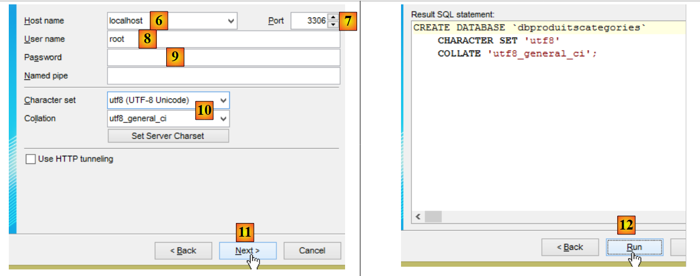
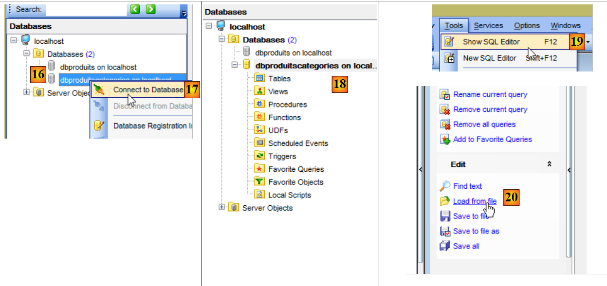
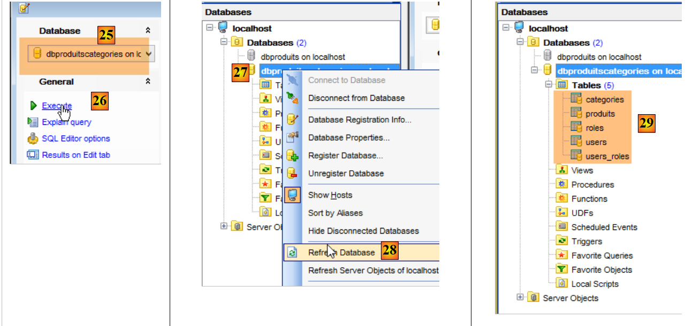
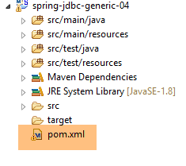
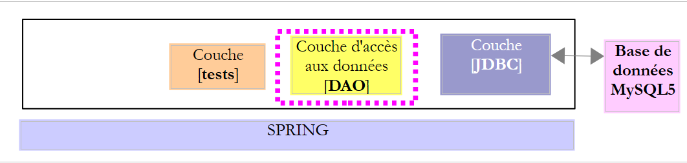
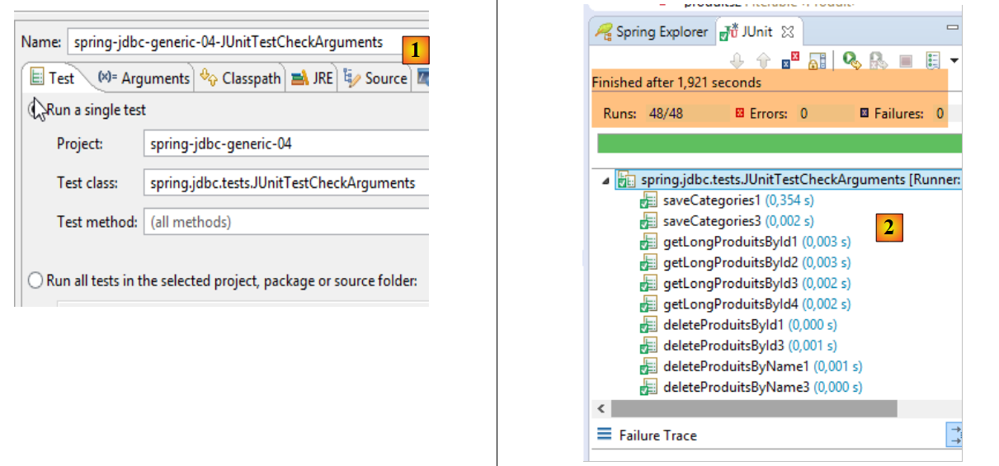

4. Introduction to Spring JDBC
In this chapter, we will examine the following architecture:
 |
This is the same architecture as before. We will introduce two changes:
- the database will have two tables linked by a foreign key relationship;
- the [DAO] layer will be implemented using the [Spring JDBC] library, which simplifies the management of the JDBC API;
4.1. Setting up the development environment
Using STS, import the [spring-jdbc-04] project located in the [<examples>/spring-database-generic/spring-jdbc] folder
 |
Additionally, we need to create a new MySQL database using the [MyManager] client (see section 3.1):
 |
- In [3], the following examples use a MySQL database named [dbproduitscategories];
 |
- In [9], enter the root user’s password (this password is “root” in this document);
 |
 |
- in [18], the [dbproduitscategories] database was created empty. We create tables and populate it with an SQL script [19-20];
 |
- In [21], navigate to the folder [<examples>/spring-database-config/mysql/databases];
 |
- in [25], make sure you are in the [dbproduitscategories] database and not the [dbproduits] database;
- in [29], the SQL script has created five tables. The [ROLES, USERS, USERS_ROLES] tables will only be used when we address the security of the web service built to expose the [dbproduitscategories] database on the web;
4.2. The [dbproduitscategories] database
The [dbproduitscategories] database is an extension of the [dbproduits] database discussed earlier. Whereas in the [PRODUITS] table the product had a category identified by a number that had no particular meaning, here that number will be a foreign key in the [CATEGORIES] table.
The [PRODUCTS] table is as follows:
 |
- [ID]: the auto-incrementing primary key of the [PRODUCTS] table;
- [NAME]: the unique name of the product [4];
- [PRICE]: the product's price;
- [DESCRIPTION]: the product description;
- [VERSIONING] is the product’s version number. Its initial version is 1 [3]. Each time the product is modified, its version number is incremented by the code that operates the table;
- [CATEGORY_ID]: the foreign key in the [CATEGORIES] table to identify the category to which the product belongs;
 |
- in [1-3], the foreign key [CATEGORIE_ID] of the [PRODUITS] table. It references the [ID] column of the [CATEGORIES] table [4-5];
- when a category is deleted, all products linked to it are also deleted [6]. This point is important to note because it is used in the construction of the [DAO] layer that uses the [dbproduitscategories] database;
The [CATEGORIES] table is as follows:
 |
- [ID]: auto-incrementing primary key;
- [VERSIONING]: category version number;
- [NAME]: unique name of the category;
4.3. The Eclipse Project
 |
The [spring-jdbc-04] project implements the following architecture:
 |
The [spring-jdbc-04] project is a Maven project configured by the following [pom.xml] file:
 |
<?xml version="1.0" encoding="UTF-8"?>
<project xmlns="http://maven.apache.org/POM/4.0.0" xmlns:xsi="http://www.w3.org/2001/XMLSchema-instance"
xsi:schemaLocation="http://maven.apache.org/POM/4.0.0 http://maven.apache.org/xsd/maven-4.0.0.xsd">
<modelVersion>4.0.0</modelVersion>
<groupId>dvp.spring.database</groupId>
<artifactId>spring-jdbc-generic-04</artifactId>
<version>0.0.1-SNAPSHOT</version>
<packaging>jar</packaging>
<name>spring-jdbc-generic-04</name>
<description>Demo project for Spring JdbcTemplate</description>
<parent>
<groupId>org.springframework.boot</groupId>
<artifactId>spring-boot-starter-parent</artifactId>
<version>1.2.3.RELEASE</version>
<relativePath /> <!-- lookup parent from repository -->
</parent>
<properties>
<project.build.sourceEncoding>UTF-8</project.build.sourceEncoding>
<java.version>1.8</java.version>
</properties>
<dependencies>
<!-- JDBC configuration for the DBMS -->
<dependency>
<groupId>dvp.spring.database</groupId>
<artifactId>generic-config-jdbc</artifactId>
<version>0.0.1-SNAPSHOT</version>
</dependency>
<!-- Spring JdbcTemplate -->
<dependency>
<groupId>org.springframework.boot</groupId>
<artifactId>spring-boot-starter-jdbc</artifactId>
</dependency>
</dependencies>
<build>
<plugins>
<plugin>
<groupId>org.apache.maven.plugins</groupId>
<artifactId>maven-surefire-plugin</artifactId>
<version>2.18.1</version>
</plugin>
</plugins>
</build>
</project>
- lines 28–32: the project relies on the [mysql-config-jdbc] project, which configures the JDBC layer;
- lines 34–37: the [spring-boot-starter-jdbc] artifact provides the Spring JDBC libraries;
In the end, the dependencies are as follows:
 |
4.4. Spring Configuration
 |
The [AppConfig] class that configures the Spring project is as follows:
package spring.jdbc.config;
import generic.jdbc.config.ConfigJdbc;
import org.apache.tomcat.jdbc.pool.DataSource;
import org.springframework.context.annotation.Bean;
import org.springframework.context.annotation.ComponentScan;
import org.springframework.context.annotation.Configuration;
import org.springframework.context.annotation.Import;
import org.springframework.jdbc.core.namedparam.NamedParameterJdbcTemplate;
import org.springframework.jdbc.core.simple.SimpleJdbcInsert;
import org.springframework.jdbc.datasource.DataSourceTransactionManager;
import org.springframework.transaction.PlatformTransactionManager;
import org.springframework.transaction.annotation.EnableTransactionManagement;
@Configuration
@ComponentScan(basePackages = { "spring.jdbc.dao" })
@EnableTransactionManagement
@Import({ generic.jdbc.config.ConfigJdbc.class })
public class AppConfig {
// data source
@Bean
public DataSource dataSource() {
// TomcatJdbc data source
DataSource dataSource = new DataSource();
// JDBC access configuration
dataSource.setDriverClassName(ConfigJdbc.DRIVER_CLASSNAME);
dataSource.setUsername(ConfigJdbc.USER_DBPRODUITSCATEGORIES);
dataSource.setPassword(ConfigJdbc.PASSWD_DBPRODUITSCATEGORIES);
dataSource.setUrl(ConfigJdbc.URL_DBPRODUITSCATEGORIES);
// Initial open connections
dataSource.setInitialSize(5);
// result
return dataSource;
}
// Transaction manager
@Bean
public PlatformTransactionManager transactionManager(DataSource dataSource) {
return new DataSourceTransactionManager(dataSource);
}
// JdbcTemplate
@Bean
public NamedParameterJdbcTemplate namedParameterJdbcTemplate(DataSource dataSource) {
return new NamedParameterJdbcTemplate(dataSource);
}
// insert product
@Bean
public SimpleJdbcInsert simpleJdbcInsertProduct(DataSource dataSource) {
return new SimpleJdbcInsert(dataSource).withTableName(ConfigJdbc.TAB_PRODUITS).usingGeneratedKeyColumns(
ConfigJdbc.PRODUCTS_ID);
}
// insert category
@Bean
public SimpleJdbcInsert simpleJdbcInsertCategory(DataSource dataSource) {
return new SimpleJdbcInsert(dataSource).withTableName(ConfigJdbc.TAB_CATEGORIES).usingGeneratedKeyColumns(
ConfigJdbc.TAB_CATEGORIES_ID);
}
}
- line 16: the class is a Spring configuration class;
- line 17: the [spring.jdbc.dao] package will be scanned for Spring components other than those present in the [AppConfig] class. This is where we will find the component implementing the [DAO] layer;
- line 18: we will not manage transactions ourselves but leave them to Spring JDBC. The only thing to do will be to annotate the methods that need to be executed within a transaction with the Spring [@Transactional] annotation. Line 18 ensures that this annotation is processed and not ignored. Transaction management is handled by one of the Spring JDBC project dependencies imported via the [pom.xml] file;
- line 19: we import the beans already defined in the [generic.jdbc.config.ConfigJdbc] class from the [mysql-config-jdbc] project;
- lines 23–36: the [tomcat-jdbc] data source introduced in the [spring-jdbc-02] example;
- lines 40–42: the transaction manager associated with the previously defined data source. The bean must be named [transactionManager] because this is the name used by the [@EnableTransactionManagement] annotation. The [DataSourceTransactionManager] is provided by the Spring JDBC library (line 12);
- lines 45–48: the [namedParameterJdbcTemplate] bean, on which the implementation of the [DAO] layer will be based. This bean is provided by the Spring JDBC library (line 10). This bean is also linked to the data source defined earlier (line 47);
- lines 51–55: the [simpleJdbcInsertProduit] bean (arbitrary name) will be used to insert a product into the [PRODUITS] table and retrieve the generated primary key. The various parameters used are as follows:
- [dataSource]: the [tomcat-jdbc] data source from lines 24–36;
- [ConfigJdbc.TAB_PRODUITS]: the [PRODUITS] table;
- [ConfigJdbc.TAB_CATEGORIES_ID]: the primary key column of the [PRODUCTS] table. Note that for PostgreSQL, the name of this column must be in lowercase;
- lines 58–62: the [simpleJdbcInsertCategorie] bean will be used to insert a category into the [CATEGORIES] table and retrieve the generated primary key;
4.5. Project Exceptions
 |
We have already seen the classes [UncheckedException, DaoException, ShortException] in the [spring-jdbc-03] project. We are adding a new one:
package spring.jdbc.infrastructure;
public class MyIllegalArgumentException extends UncheckedException {
private static final long serialVersionUID = 1L;
// constructors
public MyIllegalArgumentException() {
super();
}
public MyIllegalArgumentException(int code, Throwable e, String className) {
super(code, e, className);
}
}
- The [MyIllegalArgumentException] class derives from the [UncheckedException] class and is therefore an unchecked class. It will be used to signal a call with incorrect arguments to a method in the [DAO] layer. We did not name it [IllegalArgumentException] because this exception already exists in the JDK and this sometimes caused the compiler to generate an incorrect [import];
4.6. Project Entities
 |
The classes in the [spring.jdbc.entities] package represent the rows in the [dbproduitscategories] database tables. For now, we will ignore the [USERS, ROLES, USERS_ROLE] tables.
All entities extend the parent class [AbstractCoreEntity]:
package spring.jdbc.entities;
public abstract class AbstractCoreEntity {
// properties
protected Long id;
protected Long version;
// constructors
public AbstractCoreEntity() {
}
public AbstractCoreEntity(Long id, Long version) {
this.id = id;
this.version = version;
}
public AbstractCoreEntity(AbstractCoreEntity entity) {
this.id = entity.id;
this.version = entity.version;
}
public void setAbstractCoreEntity(AbstractCoreEntity entity) {
this.id = entity.id;
this.version = entity.version;
}
// ------------------------------------------------------------
// Override [equals] and [hashCode]
@Override
public int hashCode() {
return (id != null ? id.hashCode() : 0);
}
@Override
public boolean equals(Object entity) {
if (!(entity instanceof AbstractCoreEntity)) {
return false;
}
String class1 = this.getClass().getName();
String class2 = entity.getClass().getName();
if (!class2.equals(class1)) {
return false;
}
AbstractCoreEntity other = (AbstractCoreEntity) entity;
return id != null && other.id != null && id.equals(other.id);
}
// getters and setters
...
}
- line 5: the [id] field will be associated with the [ID] column, the primary key of the tables;
- line 6: the [version] field will be associated with the [VERSIONING] column of the tables;
- lines 8–26: various constructors and methods for constructing or initializing an [AbstractCoreEntity] object;
- lines 35–47: the [equals] method states that two [AbstractCoreEntity] objects are equal if they have the same [id] field. It is important to remember here that [AbstractCoreEntity] objects will be representations of table rows where [id] is the primary key and where, therefore, there cannot be two rows with the same [id];
- lines 30–33: a proposal for [hashCode];
The [Product] class will represent a row in the [PRODUCTS] table:
package spring.jdbc.entities;
import com.fasterxml.jackson.annotation.JsonFilter;
@JsonFilter("jsonFilterProduct")
public class Product extends AbstractCoreEntity {
// properties
private String name;
private Long categoryId;
private double price;
private String description;
private Category category;
// constructors
public Product() {
}
public Product(Long id, Long version, String name, Long categoryId, double price, String description,
Category category) {
super(id, version);
this.name = name;
this.categoryId = categoryId;
this.price = price;
this.description = description;
this.category = category;
}
// signature
public String toString() {
return String.format("[id=%s, version=%s, name=%s, price=10.2f, desc=%s, categoryId=%s]", id, version, name, price,
description, categoryId);
}
// getters and setters
...
}
- line 6: the [Product] class extends the [AbstractCoreEntity] class;
- lines 8–12: the fields [id, version, name, categoryId, price, description] correspond to the columns [ID, VERSIONING, NAME, CATEGORY_ID, PRICE, DESCRIPTION] in the [PRODUCTS] table;
- line 12: the object of type [Category] with primary key [categoryId]. This field may or may not be populated, depending on the case. When it is populated, we refer to a long-form product [LongProduct]; otherwise, a short-form product [ShortProduct];
- line 5: a JSON filter. Note that the [mysql-config-jdbc] project includes a JSON library. The filter is necessary because the [category] field may or may not be populated. In this case, the JSON representation of the product differs. To handle these two cases, we will configure the [jsonFilterProduct] filter on line 5. A JSON filter allows us to dynamically specify which fields to exclude from the JSON representation. When we know that the [category] field has not been filled in, we will exclude it from the product’s JSON representation;
The [Category] class represents a row in the [CATEGORIES] table:
package spring.jdbc.entities;
import java.util.ArrayList;
import java.util.List;
import com.fasterxml.jackson.annotation.JsonFilter;
@JsonFilter("jsonFilterCategorie")
public class Categorie extends AbstractCoreEntity {
// properties
private String name;
public List<Product> products;
// constructors
public Category() {
}
public Category(Long id, Long version, String name, List<Product> products) {
super(id, version);
this.name = name;
this.products = products;
}
// signature
public String toString() {
return String.format("[id=%s, version=%s, name=%s]", id, version, name);
}
// methods
public void addProduct(Product product) {
// Add a product
if (products == null) {
products = new ArrayList<Product>();
}
if (product != null) {
// add the product
products.add(product);
// set its category
product.setCategory(this);
product.setCategoryId(this.id);
}
}
// getters and setters
...
}
- line 9: the [Category] class extends the [AbstractCoreEntity] class;
- line 12: the fields [id, version, name] correspond to the columns [ID, VERSIONING, NAME] in the [CATEGORIES] table;
- line 13: the [products] field represents the list of products in the category. This field is not always populated. When it is not, we refer to a short-form category [ShortCategorie]; otherwise, a long-form category [LongCategorie];
- lines 32–44: the [addProduct] method allows you to add a product to the category (line 39) and set the category’s characteristics (categoryID and category) in the added product;
- line 8: a JSON filter. When the JSON library needs to serialize/deserialize a [Category] object, we must tell it how to handle the filter named [jsonFilterCategory];
4.7. The Idao<T> interface
 |
 |
The [IDao] interface of the [DAO] layer has the following signature:
package spring.jdbc.dao;
import java.util.List;
import spring.jdbc.entities.AbstractCoreEntity;
public interface IDao<T extends AbstractCoreEntity> {
// list of all T entities
public List<T> getAllShortEntities();
public List<T> getAllLongEntities();
// specific entities - short version
public List<T> getShortEntitiesById(Iterable<Long> ids);
public List<T> getShortEntitiesById(Long... ids);
public List<T> getShortEntitiesByName(Iterable<String> names);
public List<T> getShortEntitiesByName(String... names);
// specific entities - long version
public List<T> getLongEntitiesById(Iterable<Long> ids);
public List<T> getLongEntitiesById(Long... ids);
public List<T> getLongEntitiesByName(Iterable<String> names);
public List<T> getLongEntitiesByName(String... names);
// Update multiple entities
public List<T> saveEntities(Iterable<T> entities);
public List<T> saveEntities(@SuppressWarnings("unchecked") T... entities);
// Delete all entities
public void deleteAllEntities();
// Delete multiple entities
public void deleteEntitiesById(Iterable<Long> ids);
public void deleteEntitiesById(Long... ids);
public void deleteEntitiesByName(Iterable<String> names);
public void deleteEntitiesByName(String... names);
public void deleteEntitiesByEntity(Iterable<T> entities);
public void deleteEntitiesByEntity(@SuppressWarnings("unchecked") T... entities);
}
- Line 7: Here we have an [IDao] interface parameterized by a type T with a condition: this type must extend the [AbstractCoreEntity] class or implement the [AbstractCoreEntity] interface. The [extends] keyword is used for both cases. Here, T will be instantiated either by the [Product] type or by the [Category] type. Indeed, it quickly becomes apparent that we perform the same types of operations (insertion, modification, deletion, selection) on the [Product] and [Category] types. It therefore makes sense to group these methods into a generic interface;
- depending on the context, the terms [LongEntity] and [ShortEntity] refer to different situations:
- when T is the [Product] type:
- [ShortEntity] is the product without its [Category category] field filled in;
- [LongEntity] is the product with its [Category] field filled in;
- when T is the type [Category]:
- [ShortEntity] is the category without its [List<Product> products] field filled in;
- [LongEntity] is the product with its [List<Product> products] field populated;
- when T is the [Product] type:
We therefore have an interface with 19 methods. Most of the methods are duplicates. Let’s take the example of the [getShortEntitiesById] method:
public List<T> getShortEntitiesById(Iterable<Long> ids);
public List<T> getShortEntitiesById(Long... ids);
- Lines 1 and 3: The parameter is the list of primary keys of the entities for which we want the short version. This list is presented in two different forms:
- line 1: a list implementing the [Iterable<Long>] interface. The [List<Long>] type implements this interface, but there are many others. If we had written [List<Long> ids], that would have been sufficient for our examples, but it would have forced the user of our examples to perform conversions if their parameter was not of the exact expected type;
- line 3: unfortunately, the type `Long[]` does not implement the `Iterable<Long>` interface. In this case, we will use the version from line 3. The formal parameter [Long... ids] (3 dots) can accept values from either an array or a sequence of IDs: getShortEntitiesById(id1, id2, ...);
This same IDao<T> interface will be implemented by the following architecture:
 |
where a [JPA] (Java Persistence API) layer will be inserted between the [DAO] layer and the DBMS’s JDBC driver. This will allow us to have a common test layer for both architectures. In both cases, the [DAO] layer will present two interfaces:
- IDao<Product> to access the [PRODUCTS] table;
- IDao<Category> to access the [CATEGORIES] table;
4.8. Implementation of the IDao<T> interface
|
- the IDao<Product> interface is implemented by the [DaoProduct] class;
- The IDao<Category> interface is implemented by the [DaoCategory] class;
The classes [DaoProduct] and [DaoCategory] both extend the following abstract class [ AbstractDao]:
package spring.jdbc.dao;
import java.util.ArrayList;
import java.util.List;
import org.springframework.beans.factory.annotation.Autowired;
import org.springframework.beans.factory.annotation.Qualifier;
import org.springframework.transaction.annotation.Transactional;
import spring.jdbc.entities.AbstractCoreEntity;
import spring.jdbc.infrastructure.MyIllegalArgumentException;
import com.google.common.collect.Lists;
public abstract class AbstractDao<T extends AbstractCoreEntity> implements IDao<T> {
// injections
@Autowired
@Qualifier("maxPreparedStatementParameters")
protected int maxPreparedStatementParameters;
// local
protected String simpleClassName = getClass().getSimpleName();
@Override
@Transactional(readOnly = true)
public List<T> getShortEntitiesById(Iterable<Long> ids) {
// argument validity
List<T> entities = checkNullOrEmptyArgument(true, ids);
if (entities != null) {
return entities;
}
// retrieve in batches
entities = new ArrayList<T>();
int size = maxPreparedStatementParameters;
List<Long> listIds = Lists.newArrayList(ids);
int numIds = listIds.size();
for (int i = 0; i < nbIds; i += size) {
int limit = Math.min(nbIds, i + size);
entities.addAll(getShortEntitiesById(listIds.subList(i, limit)));
}
// result
return entities;
}
@Override
@Transactional(readOnly = true)
public List<T> getShortEntitiesById(Long... ids) {
// Check argument validity
List<T> entities = checkNullOrEmptyArgument(true, ids);
if (entities != null) {
return entities;
}
// result
return getShortEntitiesById((Iterable<Long>) Lists.newArrayList(ids));
}
@Override
@Transactional(readOnly = true)
public List<T> getShortEntitiesByName(Iterable<String> names) {
...
}
@Override
@Transactional(readOnly = true)
public List<T> getShortEntitiesByName(String... names) {
...
}
@Override
@Transactional(readOnly = true)
public List<T> getLongEntitiesById(Iterable<Long> ids) {
...
}
@Override
@Transactional(readOnly = true)
public List<T> getLongEntitiesById(Long... ids) {
...
}
@Override
@Transactional(readOnly = true)
public List<T> getLongEntitiesByName(Iterable<String> names) {
...
}
@Override
@Transactional(readOnly = true)
public List<T> getLongEntitiesByName(String... names) {
...
}
@Override
@Transactional
public List<T> saveEntities(Iterable<T> entities) {
...
}
@Override
@Transactional
public List<T> saveEntities(@SuppressWarnings("unchecked") T... entities) {
...
}
@Override
public void deleteEntitiesById(Iterable<Long> ids) {
...
}
@Override
public void deleteEntitiesById(Long... ids) {
...
}
@Override
public void deleteEntitiesByName(Iterable<String> names) {
...
}
@Override
public void deleteEntitiesByName(String... names) {
...
}
@Override
public void deleteEntitiesByEntity(Iterable<T> entities) {
...
}
@Override
public void deleteEntitiesByEntity(@SuppressWarnings("unchecked") T... entities) {
...
}
protected void deleteEntitiesByEntity(List<T> entities) {
...
}
@Override
@Transactional(readOnly = true)
public abstract List<T> getAllShortEntities();
@Override
@Transactional(readOnly = true)
public abstract List<T> getAllLongEntities();
@Override
public abstract void deleteAllEntities();
// private methods ----------------------------------------------
private <T2> List<T> checkNullOrEmptyArgument(boolean checkEmpty, Iterable<T2> elements) {
...
}
@SuppressWarnings("unchecked")
private <T2> List<T> checkNullOrEmptyArgument(boolean checkEmpty, T2... elements) {
...
}
// protected methods ----------------------------------------------
abstract protected List<T> getShortEntitiesById(List<Long> ids);
abstract protected List<T> getShortEntitiesByName(List<String> names);
abstract protected List<T> getLongEntitiesById(List<Long> ids);
abstract protected List<T> getLongEntitiesByName(List<String> names);
abstract protected List<T> saveEntities(List<T> entities);
abstract protected void deleteEntitiesById(List<Long> ids);
abstract protected void deleteEntitiesByName(List<String> names);
}
- Line 15: The [AbstractDao] class is abstract (keyword `abstract`). As such, it cannot be instantiated. It can only be derived from. This class has several roles:
- defining the nature of the transaction in which each method is executed;
- to handle as many common tasks as possible for both implementations of the [IDao<Product>] and [IDao<Category>] interfaces. This primarily involves validating the arguments. Null arguments and empty lists are not accepted;
- Unify the types of the parameters `T... params` and `Iterable<T> params` into a single type: `List<T> params`;
- delegate the work to the child classes as soon as it becomes specific to one of the two interfaces;
Thanks to the standardization of the parameters of the various methods performed by the [AbstractDao] class, the child classes [DaoProduit] and [DaoCategorie] will only have 10 methods to implement instead of 19:
// Methods implemented by the child classes ----------------------------------------------
abstract protected List<T> getShortEntitiesById(List<Long> ids);
abstract protected List<T> getShortEntitiesByName(List<String> names);
abstract protected List<T> getLongEntitiesById(List<Long> ids);
abstract protected List<T> getLongEntitiesByName(List<String> names);
abstract protected List<T> saveEntities(List<T> entities);
abstract protected void deleteEntitiesById(List<Long> ids);
abstract protected void deleteEntitiesByName(List<String> names);
@Override
@Transactional(readOnly = true)
public abstract List<T> getAllShortEntities();
@Override
@Transactional(readOnly = true)
public abstract List<T> getAllLongEntities();
@Override
public abstract void deleteAllEntities();
Let's look at some methods of the [AbstractDao] class.
[getShortEntitiesById] method
This method retrieves the short version of entities for which primary keys are provided.
// injections
@Autowired
@Qualifier("maxPreparedStatementParameters")
protected int maxPreparedStatementParameters;
// local
protected String simpleClassName = getClass().getSimpleName();
@Override
@Transactional(readOnly = true)
public List<T> getShortEntitiesById(Iterable<Long> ids) {
...
}
- Lines 2–4: We inject the [maxPreparedStatementParameters] bean defined in the [ConfigJdbc] configuration file, which configures the JDBC layer for a specific DBMS:
// maximum number of parameters for a [PreparedStatement]
public final static int MAX_PREPAREDSTATEMENT_PARAMETERS = 10000;
@Bean(name = "maxPreparedStatementParameters")
public int maxPreparedStatementParameters() {
return MAX_PREPAREDSTATEMENT_PARAMETERS;
}
- Lines 1–7: define the [maxPreparedStatementParameters] bean, which sets the maximum number of parameters that can be passed to a [PreparedStatement]. This requirement did not arise with the MySQL DBMS, which accepted 10,000 parameters for a [PreparedStatement]. During testing with the SQL Server DBMS, it threw an exception indicating that the maximum number of parameters for a [PreparedStatement] was 2,100. Therefore, this number has become a configuration parameter for the various DBMSs. It must therefore be placed in the [sgbd-config-jdbc] configuration project for each DBMS;
Let's go back to the code for the [getShortEntitiesById] method:
// injections
@Autowired
@Qualifier("maxPreparedStatementParameters")
protected int maxPreparedStatementParameters;
// local
protected String simpleClassName = getClass().getSimpleName();
@Override
@Transactional(readOnly = true)
public List<T> getShortEntitiesById(Iterable<Long> ids) {
...
}
- line 7: the class name. Used as a parameter for one of the constructors of the exception class [DaoException];
- line 10: the annotation [@Transactional(readOnly = true)] indicates that the method must run within a read-only transaction. One might question the usefulness of such a transaction, since the method only performs reads and therefore, in case of failure, there is nothing to roll back. The author of the [Spring Data] library recommends this and explains why. I followed his advice;
The body of the method is as follows:
@Override
@Transactional(readOnly = true)
public List<T> getShortEntitiesById(Iterable<Long> ids) {
// check argument validity
List<T> entities = checkNullOrEmptyArgument(true, ids);
if (entities != null) {
return entities;
}
...
}
- Line 5: The validity of the [ids] parameter is checked by the following method:
private <T2> List<T> checkNullOrEmptyArgument(boolean checkEmpty, Iterable<T2> elements) {
// Are elements null?
if (elements == null) {
throw new MyIllegalArgumentException(222, new NullPointerException("The argument cannot be null"), simpleClassName);
}
// Is elements empty?
if (!elements.iterator().hasNext()) {
if (checkEmpty) {
throw new MyIllegalArgumentException(223, new RuntimeException("The argument cannot be an empty list"),
simpleClassName);
} else {
return new ArrayList<T>();
}
}
// default result
return null;
}
- line 1: the [checkNullOrEmptyArgument] method is a generic method parameterized by the type <T2>. T2 is the type of the elements passed as the second parameter to the method. This can be [Long, String, AbstractCoreEntity];
- line 1: the [checkNullOrEmptyArgument] method takes two parameters:
- [Iterable<T2> elements]: the parameter to be tested;
- [checkEmpty]: set to true if we need to verify that the previous parameter is a non-empty list;
- lines 4–6: we check that the [elements] parameter is not null. If it is, a [MyIllegalArgumentException] is thrown;
- lines 8–15: if the list is empty and we were supposed to verify that it was non-empty, we throw a [MyIllegalArgumentException];
- line 13: if the list is empty and we were not supposed to check that it was non-empty, then we return an empty list of elements of type T. The [Iterable<T2>] interface has an [iterator()] method that allows iterating over the elements of the list implementing the interface. Two methods of this iterator are useful:
- [iterator].hasNext(): returns true if the list still has an element to process, false otherwise;
- [iterator].next(): returns the current element of the list and advances the iterator by one element;
- Finally,
- if the argument [T2... elements] is null or empty, a [MyIllegalArgumentException] is thrown;
- if the argument [T2... elements] is an empty list and this was legal, then an empty list of elements of type T is returned;
A similar method exists when the argument to be tested is of type [T2... elements]:
@SuppressWarnings("unchecked")
private <T2> List<T> checkNullOrEmptyArgument(boolean checkEmpty, T2... elements) {
...
}
Let's return to the code for the [getShortEntitiesById] method:
@Override
@Transactional(readOnly = true)
public List<T> getShortEntitiesById(Iterable<Long> ids) {
// Check argument validity
List<T> entities = checkNullOrEmptyArgument(true, ids);
// retrieve in batches
entities = new ArrayList<T>();
int size = maxPreparedStatementParameters;
List<Long> listIds = Lists.newArrayList(ids);
int numIds = listIds.size();
for (int i = 0; i < nbIds; i += size) {
int limit = Math.min(nbIds, i + size);
entities.addAll(getShortEntitiesById(listIds.subList(i, limit)));
}
// result
return entities;
}
- line 7: if we reach this point, it means the argument [Iterable<Long> ids] is valid;
- lines 7–14: we will see later that the [getShortEntitiesById] method will be implemented by a [PreparedStatement] type that will take as parameters the list of primary keys to search for. For example:
public final static String SELECT_SHORTCATEGORIE_BYID = "SELECT c.ID as c_ID, c.VERSIONING as c_VERSIONING, c.NOM as c_NOM FROM CATEGORIES c WHERE c.ID in (:ids)";
:ids is a parameter whose actual value will be of type List<Long>. Each element of this list will be passed as a parameter ? in a [PreparedStatement]. However, we have specified that this type accepts a maximum number of parameters, a number set by the [maxPreparedStatementParameters] field of the class;
- line 7: the list of T entities that will be returned by the [getShortEntitiesById] method. This list will be constructed in chunks of [maxPreparedStatementParameters] elements;
- Line 9: From the [Iterable<Long> ids] argument, we create a [List<Long> listIds] type. The [Lists] class is a class from the Google Guava library that offers numerous static methods for manipulating collections of objects. The Google Guava library has been imported (pom.xml) by the Maven project [mysql-config-jdbc]:
<!-- Google Guava -->
<dependency>
<groupId>com.google.guava</groupId>
<artifactId>guava</artifactId>
<version>16.0.1</version>
</dependency>
- line 10: the number of T entities to search for in the database;
- lines 11–13: they are searched for in groups of [size = maxPreparedStatementParameters] elements;
- line 12: a calculation to prevent going beyond the end of the [listIds] list;
- line 13: the T entities are obtained by calling [getShortEntitiesById(listIds.subList(i, limit))]. This method is defined in the class as:
abstract protected List<T> getShortEntitiesById(List<Long> ids);
It is therefore the child class that will retrieve the T entities from the database:
- [DaoProduct] if T is of type [Product];
- [DaoCategory] if T is of type [Category];
The benefit of this approach in the parent class is twofold:
- the signature of the [getShortEntitiesById] method in the child class is unique: its argument is of type [List<Long> ids];
- the child class does not have to deal with the issue of the [maxPreparedStatementParameters] parameters of a [PreparedStatement]. Its parent class has handled this for it;
- line 13: the entities returned by the child class are added to the list of entities that will be returned by the parent class (line 16);
Now, let’s look at the implementation of the class’s other method, [getShortEntitiesById]:
@Override
@Transactional(readOnly = true)
public List<T> getShortEntitiesById(Long... ids) {
// Check argument validity
List<T> entities = checkNullOrEmptyArgument(true, ids);
// result
return getShortEntitiesById((Iterable<Long>) Lists.newArrayList(ids));
}
- line 3: the type of the argument has changed: Long... ids;
- line 5: the validity of this argument is tested;
- line 7: we call the [getShortEntitiesById] method we just described. Here again, we use the [Lists] class from the [Google Guava] library. Note that we must perform an explicit cast to the type [Iterable<Long>] to help the compiler choose the correct method, since the [getShortEntitiesById] method has three signatures in the class:
- List<T> getShortEntitiesById(Long... ids);
- List<T> getShortEntitiesById(Iterable<Long> ids);
- List<T> getShortEntitiesById(List<Long> ids), which is abstract and implemented by the child class;
We will not comment further on the abstract class [AbstractDao], the parent class of the [DaoProduit] and [DaoCategorie] classes. We will simply note that it is sometimes useful to factorize behaviors common to several classes into a parent class, whether abstract or not. After this work, the child classes only have the following methods left to implement:
// methods implemented by the child classes ----------------------------------------------
abstract protected List<T> getShortEntitiesById(List<Long> ids);
abstract protected List<T> getShortEntitiesByName(List<String> names);
abstract protected List<T> getLongEntitiesById(List<Long> ids);
abstract protected List<T> getLongEntitiesByName(List<String> names);
abstract protected List<T> saveEntities(List<T> entities);
abstract protected void deleteEntitiesById(List<Long> ids);
abstract protected void deleteEntitiesByName(List<String> names);
@Override
@Transactional(readOnly = true)
public abstract List<T> getAllShortEntities();
@Override
@Transactional(readOnly = true)
public abstract List<T> getAllLongEntities();
@Override
public abstract void deleteAllEntities();
The code in Section 4.8 shows the different types of transactions used for each method. Note the following points:
- methods that read the database are annotated with [@Transactional(readOnly = true)];
- methods that modify the database are annotated with [@Transactional];
- [delete] methods are not annotated and therefore do not run within a transaction. The idea is that if a deletion fails, the user likely does not want to roll back all the successful ones that occurred previously;
4.9. The [DaoCategorie] class
 |
|
The [DaoCategorie] class implements the [IDao<Categorie>] interface, which provides access to data in the [CATEGORIES] table of the MySQL database [dbproduitscategories]. Its skeleton is as follows:
package spring.jdbc.dao;
import generic.jdbc.config.ConfigJdbc;
import java.sql.ResultSet;
import java.sql.SQLException;
import java.util.ArrayList;
import java.util.Collections;
import java.util.HashMap;
import java.util.List;
import java.util.Map;
import org.springframework.beans.factory.annotation.Autowired;
import org.springframework.jdbc.core.RowMapper;
import org.springframework.jdbc.core.namedparam.MapSqlParameterSource;
import org.springframework.jdbc.core.namedparam.NamedParameterJdbcTemplate;
import org.springframework.jdbc.core.namedparam.SqlParameterSource;
import org.springframework.jdbc.core.namedparam.SqlParameterSourceUtils;
import org.springframework.jdbc.core.simple.SimpleJdbcInsert;
import org.springframework.stereotype.Component;
import spring.jdbc.entities.Category;
import spring.jdbc.entities.Product;
import spring.jdbc.infrastructure.DaoException;
import com.google.common.collect.Lists;
@Component
public class CategoryDao extends AbstractDao<Category> {
// constants
// injections
@Autowired
private NamedParameterJdbcTemplate namedParameterJdbcTemplate;
@Autowired
private SimpleJdbcInsert simpleJdbcInsertCategory;
@Autowired
private IDao<Product> productDao;
@Override
public List<Category> getAllShortEntities() {
...
}
@Override
public List<Category> getAllLongEntities() {
...
}
@Override
public void deleteAllEntities() {
...
}
@Override
protected List<Category> getShortEntitiesById(List<Long> ids) {
...
}
@Override
protected List<Category> getShortEntitiesByName(List<String> names) {
...
}
@Override
protected List<Category> getLongEntitiesById(List<Long> ids) {
...
}
@Override
protected List<Category> getLongEntitiesByName(List<String> names) {
...
}
@Override
protected List<Category> saveEntities(List<Category> entities) {
...
}
@Override
protected void deleteEntitiesById(List<Long> ids) {
...
}
@Override
protected void deleteEntitiesByName(List<String> names) {
...
}
...
}
// --------------------- mappers
class ShortCategoryMapper implements RowMapper<Category> {
....
}
class LongCategoryMapper implements RowMapper<Category> {
....
}
- line 28: the [DaoCategorie] class is a Spring component and, as such, can be injected into other Spring components;
- line 29: the [DaoCategorie] class extends the abstract class [AbstractDao<Categorie>], making it an implementation of the [IDao<Categorie>] interface;
- lines 34–37: injection of beans defined in the [AppConfig] class described in section 4.4;
- lines 38–39: injection of a reference to the [DaoProduit] class, which implements the [IDao<Produit>] interface that manages access to data in the [PRODUITS] table;
- lines 41–89: implementation of the [IDao<Category>] interface;
- lines 95–101: two internal classes implementing the [RowMapper<T>] interface;
Let’s examine the methods one by one.
4.9.1. The [getAllShortEntities] method
The [getAllShortEntities] method returns all categories from the [CATEGORIES] table in their short form:
@Override
public List<Category> getAllShortEntities() {
try {
return namedParameterJdbcTemplate.query(ConfigJdbc.SELECT_ALLSHORTCATEGORIES, new ShortCategorieMapper());
} catch (Exception e) {
throw new DaoException(202, e, simpleClassName);
}
}
All methods rely on the [namedParameterJdbcTemplate] object defined in the Spring configuration file and provided by the Spring JDBC library. It has numerous methods. The one used above is as follows:

- [sql] is the SQL statement to be executed;
- [rowMapper] is an instance of the following [RowMapper<T>] interface:

The idea is as follows:
- the [namedParameterJdbcTemplate].query(String sql, RowMapper<T> rowMapper) method executes the [Select] SQL statement. It handles any exceptions, as well as opening and closing the connection to the DBMS. The only thing it cannot do is encapsulate the elements of the [ResultSet]—the objects it obtains—into a [Category] type, because it does not know the mapping between the fields of the [Category] type and the columns of the [ResultSet]. We will see later that this mapping is created using JPA technology, which will automatically encapsulate the elements of a [ResultSet] into instances of type T. For now, the second parameter of the [query] method is an instance of the [RowMapper<T>] interface capable of performing this encapsulation;
Let’s return to the code:
@Override
public List<Category> getAllShortEntities() {
try {
return namedParameterJdbcTemplate.query(ConfigJdbc.SELECT_ALLSHORTCATEGORIES, new ShortCategorieMapper());
} catch (Exception e) {
throw new DaoException(202, e, simpleClassName);
}
}
The SQL statement [ConfigJdbc.SELECT_ALLSHORTCATEGORIES] is as follows:
public final static String SELECT_ALLSHORTCATEGORIES = "SELECT c.ID as c_ID, c.VERSIONING as c_VERSIONING, c.NAME as c_NAME FROM CATEGORIES c";
The query retrieves the [ID, VERSIONING, NOM] columns from the [CATEGORIES] table. We will consistently use the following syntax:
SELECT t1.COL1 as t1_COL1, t1.COL2 as t1_COL2 FROM TABLE1 t1, TABLE2 t2 WHERE ...
What is important is the naming of the columns returned by the SELECT statement using the [as column_name] attribute. This is the only way to ensure portability between DBMSs, as they all have their own proprietary way of naming columns returned by a SELECT statement in which columns from different tables have the same name (e.g., ID, NAME, or VERSIONING in our case). We resolve this ambiguity by specifying the names these columns should have.
The internal class [ShortCategorieMapper] is as follows:
class ShortCategorieMapper implements RowMapper<Categorie> {
@Override
public Categorie mapRow(ResultSet rs, int rowNum) throws SQLException {
return new Categorie(rs.getLong("c_ID"), rs.getLong("c_VERSIONING"), rs.getString("c_NOM"), null);
}
}
- line 1: the [ShortCategorieMapper] class implements the [RowMapper<Categorie>] interface and, as such, must implement the [mapRow] method in lines 4–5, whose role is to encapsulate a row from the [ResultSet rs] produced by the [SELECT] statement into a [Categorie] type;
- line 5: this encapsulation is performed. Note that the name used by the [rs.getType(name)] methods is the name used in the [as name] attributes of the SELECT columns;
We have thus obtained the list of categories in their short form without handling exceptions or managing the connection. This is the benefit of the Spring JDBC library, which handles everything that can be abstracted in managing table elements and leaves the developer to handle what cannot be.
4.9.2. The [getAllLongEntities] method
The [getAllLongEntities] method returns all categories from the [CATEGORIES] table in their long form:
@Override
public List<Category> getAllLongEntities() {
try {
return filterCategories(namedParameterJdbcTemplate.query(ConfigJdbc.SELECT_ALLLONGCATEGORIES,
new LongCategoryMapper()));
} catch (Exception e) {
throw new DaoException(223, e, simpleClassName);
}
}
The SQL statement [ConfigJdbc.SELECT_ALLLONGCATEGORIES] is as follows:
public final static String SELECT_ALLLONGCATEGORIES = "SELECT p.ID as p_ID, p.VERSIONING as p_VERSION, p.NAME as p_NAME, p.PRICE as p_PRICE, p.DESCRIPTION as p_DESCRIPTION, p.CATEGORY_ID AS p_CATEGORY_ID, c.ID as c_ID, c.NAME as c_NAME, c.VERSIONING as c_VERSION FROM PRODUCTS p RIGHT JOIN CATEGORIES c ON p.CATEGORY_ID=c.ID";
The goal is to retrieve the categories along with their associated products. This is achieved by joining the [CATEGORIES] table with the [PRODUCTS] table using the foreign key [CATEGORY_ID] from the [PRODUCTS] table to the [CATEGORIES] table. The syntax [FROM PRODUCTS p RIGHT JOIN CATEGORIES c ON p.CATEGORY_ID=c.ID] also retrieves categories that have no associated products. In this case, the SELECT query returns a category and a product with all columns set to NULL.
The [LongCategorieMapper] class is as follows:
class LongCategoryMapper implements RowMapper<Category> {
@Override
public Categorie mapRow(ResultSet rs, int rowNum) throws SQLException {
Category category = new Category(rs.getLong("c_ID"), rs.getLong("c_VERSION"), rs.getString("c_NAME"), null);
List<Product> products = new ArrayList<Product>();
long productId = rs.getLong("p_ID");
// case where the category has no products
if (!rs.wasNull()) {
products.add(new Product(productId, rs.getLong("p_VERSION"), rs.getString("p_NAME"), rs.getLong("p_CATEGORY_ID"),
rs.getDouble("p_PRICE"), rs.getString("p_DESCRIPTION"), category));
}
category.setProducts(products);
return category;
}
}
- line 4: the [mapRow] method must return a [Category] object with its [products] field populated, based on a row from the [ResultSet] returned by the previous SELECT statement;
Ultimately, the operation:
[namedParameterJdbcTemplate.query(ConfigJdbc.SELECT_ALLLONGCATEGORIES, new LongCategorieMapper())]
will return a list of the type:
c1, products11
c1, product12
...
c1,products1n
c2, products21
c2, products22
...
where each category [ci] will have a field [products] that is a list of products containing a single element [productsij]. Now, we need the following list:
c1, products1
c2, products2
where each category [ci] will have a field [products] that is the list of products [producti1, producti2, ...]. This is achieved by passing the list of categories to a private method [filterCategories]:
@Override
public List<Category> getAllLongEntities() {
try {
return filterCategories(namedParameterJdbcTemplate.query(ConfigJdbc.SELECT_ALLLONGCATEGORIES,
new LongCategoryMapper()));
} catch (Exception e) {
throw new DaoException(223, e, simpleClassName);
}
}
The [filterCategories] method is as follows:
private List<Category> filterCategories(List<Category> categories) {
if (categories.size() == 0) {
return categories;
}
// categories to return
List<Category> cats = new ArrayList<Category>();
// iterate through the list of categories
for (Category category : categories) {
boolean found = false;
for (Category cat : cats) {
if (category.equals(cat)) {
cat.addProduct(category.getProducts().get(0));
found = true;
break;
}
}
// Found?
if (!found) {
cats.add(category);
}
}
// result
return cats;
}
- line 1: [List<Category> categories] is the list of categories to filter (or group);
- line 6: the list of categories to return to the caller;
- lines 8–21: each category in the list to be filtered is processed;
- lines 10–16: we check whether the current category [category] is already present in the list of categories [cats] to be constructed (note that two categories are considered equal if they have the same primary key, see section 4.6);
- lines 11–14: if this is already the case, then the product encapsulated in [categorie] is added to the list of products in [cat];
- lines 18-20: if the current category [categorie] is not already present in the list of categories [cats] to be built, then it is added to it along with its list of products, which contains a single element;
Let’s consider the case where the SQL SELECT statement returns categories with no associated products. What entity does the [LongCategorieMapper] class return?
class LongCategorieMapper implements RowMapper<Categorie> {
@Override
public Categorie mapRow(ResultSet rs, int rowNum) throws SQLException {
Category category = new Category(rs.getLong("c_ID"), rs.getLong("c_VERSION"), rs.getString("c_NAME"), null);
List<Product> products = new ArrayList<Product>();
long productId = rs.getLong("p_ID");
// case where the category has no products
if (!rs.wasNull()) {
products.add(new Product(productId, rs.getLong("p_VERSION"), rs.getString("p_NAME"), rs.getLong("p_CATEGORY_ID"),
rs.getDouble("p_PRICE"), rs.getString("p_DESCRIPTION"), category));
}
category.setProducts(products);
return category;
}
}
If the SQL SELECT statement returns a category with no products, the product columns returned with the category all contain the SQL NULL value. This case is handled in lines 7–9:
- line 7: retrieve the product's primary key as a long integer;
- line 9: we check if the value read was SQL NULL (rs.wasNull). If not, we add the product to the list on line 6; otherwise, nothing is added and the product list remains empty.
Note that in all cases, we return a category with a [products] field that is not null.
4.9.3. The [getShortEntitiesById] method
The [getShortEntitiesById] method is similar to the [getAllShortEntities] method, except that it returns only the entities whose primary keys are specified in a list:
@Override
protected List<Category> getShortEntitiesById(List<Long> ids) {
try {
return namedParameterJdbcTemplate.query(ConfigJdbc.SELECT_SHORTCATEGORIE_BYID,
Collections.singletonMap("ids", ids), new ShortCategorieMapper());
} catch (Exception e) {
throw new DaoException(203, e, simpleClassName);
}
}
- Line 4: The signature of the [query] method used is as follows:

The first parameter is a parameterized SQL [Select] statement. The second is a dictionary associating each parameter with a value. The third is the instance of the class that encapsulates a row from the [ResultSet] resulting from the [Select] into an object of type T;
- Line 4: The parameterized SQL [Select] statement is as follows:
public final static String SELECT_SHORTCATEGORIE_BYID = "SELECT c.ID as c_ID, c.VERSIONING as c_VERSIONING, c.NOM as c_NOM FROM CATEGORIES c WHERE c.ID in (:ids)";
This query retrieves from the [CATEGORIES] table the categories whose primary keys are in the list :ids.
- Line 5: The second parameter of the [query] method here is a dictionary associating the key 'ids' (first parameter) with the [ids] list passed on line 1 as a parameter to the [getShortEntitiesById] method. The [Collections] class belongs to the [Google Guava] library, which we have already discussed. [Collections.singleMap] returns a dictionary with a single element;
- Line 5: The class responsible for encapsulating a row from the [ResultSet] resulting from the [Select] into an object of type [Category] is the [ShortCategoryMapper] class we have already examined;
This is typically where the [maxPreparedStatementParameters] bean comes into play. Indeed, the [:ids] parameter of the SQL statement, which represents a list of primary keys, can contain anywhere from 1 to several thousand parameters. There is a limit to this number that depends on each DBMS. For MySQL, we were able to pass 10,000 parameters without error and did not test beyond that. For SQL Server, the official limit is 2,100. For Firebird, 1,000 was too many. We reduced it to 100. Generally speaking, we did not test the maximum limit of this number for the various DBMSs.
4.9.4. The [getLongEntitiesById] method
The [getLongEntitiesById] method is analogous to the [getShortEntitiesById] method, except that it returns the long versions of the categories:
@Override
protected List<Category> getLongEntitiesById(List<Long> ids) {
try {
return filterCategories(namedParameterJdbcTemplate.query(ConfigJdbc.SELECT_LONGCATEGORIE_BYID,
Collections.singletonMap("ids", ids), new LongCategoryMapper()));
} catch (Exception e) {
throw new DaoException(205, e, simpleClassName);
}
}
Line 4, the SQL query [ConfigJdbc.SELECT_LONGCATEGORIE_BYID] is as follows:
public final static String SELECT_LONGCATEGORIE_BYID = "SELECT p.ID as p_ID, p.VERSIONING as p_VERSION, p.NOM as p_NOM, p.PRIX as p_PRIX, p.DESCRIPTION as p_DESCRIPTION, p.CATEGORY_ID AS p_CATEGORY_ID, c.ID as c_ID, c.NAME as c_NAME, c.VERSIONING as c_VERSION FROM PRODUCTS p RIGHT JOIN CATEGORIES c ON c.ID=p.CATEGORY_ID WHERE c.ID in (:ids)";
4.9.5. The [getShortEntitiesByName] method
The [getShortEntitiesByName] method is similar to the [getShortEntitiesById] method, except that categories are retrieved by their names rather than their primary keys:
@Override
protected List<Category> getShortEntitiesByName(List<String> names) {
try {
return namedParameterJdbcTemplate.query(ConfigJdbc.SELECT_SHORTCATEGORIE_BYNAME,
Collections.singletonMap("names", names), new ShortCategorieMapper());
} catch (Exception e) {
throw new DaoException(204, e, simpleClassName);
}
}
Line 4, the SQL statement [ConfigJdbc.SELECT_SHORTCATEGORIE_BYNAME] is as follows:
public final static String SELECT_SHORTCATEGORIE_BYNAME = "SELECT c.ID as c_ID, c.VERSIONING as c_VERSIONING, c.NOM as c_NOM FROM CATEGORIES c WHERE c.NOM in (:noms)";
4.9.6. The [getLongEntitiesByName] method
The [getLongEntitiesByName] method is similar to the [getShortEntitiesByName] method, except that categories are retrieved in their long versions:
@Override
protected List<Category> getLongEntitiesByName(List<String> names) {
try {
return filterCategories(namedParameterJdbcTemplate.query(ConfigJdbc.SELECT_LONGCATEGORIE_BYNAME,
Collections.singletonMap("names", names), new LongCategoryMapper()));
} catch (Exception e) {
throw new DaoException(215, e, simpleClassName);
}
}
Line 4, the SQL statement [ConfigJdbc.SELECT_LONGCATEGORIE_BYNAME] is as follows:
public final static String SELECT_LONGCATEGORIE_BYNAME = "SELECT p.ID as p_ID, p.VERSIONING as p_VERSION, p.NOM as p_NOM, p.PRIX as p_PRIX, p.DESCRIPTION as p_DESCRIPTION, p.CATEGORY_ID AS p_CATEGORY_ID, c.ID as c_ID, c.NAME as c_NAME, c.VERSIONING as c_VERSION FROM PRODUCTS p RIGHT JOIN CATEGORIES c ON c.ID=p.CATEGORY_ID WHERE c.NAME in(:names)";
4.9.7. The [deleteAllEntities] method
The [deleteAllEntities] method deletes all categories from the [CATEGORIES] table:
@Override
public void deleteAllEntities() {
try {
// delete all categories and, by cascade, all products
namedParameterJdbcTemplate.update(ConfigJdbc.DELETE_ALLCATEGORIES, (Map<String, Object>) null);
} catch (Exception e) {
throw new DaoException(208, e, simpleClassName);
}
}
- Line 4: The [namedParameterJdbcTemplate.update] method used has the following signature:

The first parameter is a parameterized SQL update statement (INSERT, UPDATE, DELETE). The second parameter is the dictionary associating values with the various parameters of the SQL statement. The method returns the number of rows updated by the SQL statement.
- Line 4: The SQL statement [ConfigJdbc.DELETE_ALLCATEGORIES] is as follows:
public final static String DELETE_ALLCATEGORIES = "DELETE FROM CATEGORIES";
This is therefore not a parameterized query. That is why the second parameter of the [update] method has the value null.
4.9.8. The [deleteAllEntitiesById] method
The [deleteAllEntitiesById] method deletes the categories from the [CATEGORIES] table for which the primary keys are passed:
@Override
protected void deleteEntitiesById(List<Long> ids) {
try {
namedParameterJdbcTemplate.update(ConfigJdbc.DELETE_CATEGORIESBYID, Collections.singletonMap("ids", ids));
} catch (Exception e) {
throw new DaoException(209, e, simpleClassName);
}
}
Line 4, the SQL statement [ConfigJdbc.DELETE_CATEGORIESBYID] is as follows:
public final static String DELETE_CATEGORIESBYID = "DELETE FROM CATEGORIES WHERE ID in (:ids)";
4.9.9. The [deleteAllEntitiesByName] method
The [deleteAllEntitiesByName] method deletes the categories from the [CATEGORIES] table whose names are passed:
@Override
protected void deleteEntitiesByName(List<String> names) {
try {
namedParameterJdbcTemplate.update(ConfigJdbc.DELETE_CATEGORIESBYNAME, Collections.singletonMap("names", names));
} catch (Exception e) {
throw new DaoException(225, e, simpleClassName);
}
}
Line 4, the SQL statement [ConfigJdbc.DELETE_CATEGORIESBYNAME] is as follows:
public final static String DELETE_CATEGORIESBYNAME = "DELETE FROM CATEGORIES WHERE NAME in (:names)";
4.9.10. The [saveEntities] method
4.9.10.1. The code
The signature of this method is as follows:
@Override
protected List<Category> saveEntities(List<Category> entities) {
The method takes a list of categories as a parameter. It performs the following operations on them:
- if the category has a null primary key, an SQL INSERT operation is performed; otherwise, an SQL UPDATE operation is performed;
- this operation is repeated for each product in the category;
The method returns the list of persisted or updated categories. The returned list is an exact representation of the categories and products present in the tables, version numbers aside: these are not actually modified in the updated entities, even though they have been incremented in the database.
This is by far the most complex method. Its code is as follows:
@Override
protected List<Category> saveEntities(List<Category> entities) {
try {
// --------------------------------------------- categories
List<Category> insertCategories = new ArrayList<Category>();
List<Category> updateCategories = new ArrayList<Category>();
// scan the categories
for (Category category : entities) {
// insert or update?
if (category.getId() == null) {
insertCategories.add(category);
} else {
updateCategories.add(category);
}
}
// Add categories
if (insertCategories.size() > 0) {
insertCategories(insertCategories);
}
// update categories
if (updateCategories.size() > 0) {
updateCategories(updateCategories);
}
// --------------------------------------------- products
// update products in categories
List<Product> allProducts = new ArrayList<Product>();
for (Category category : entities) {
List<Product> products = category.getProducts();
Long categoryId = category.getId();
if (products != null) {
// add it to the list of all products
allProducts.addAll(products);
// iterate through the products one by one to link them to their category
for (Product product : products) {
// link the product to its category
product.setCategoryId(categoryId);
product.setCategory(category);
}
}
}
// insert / update products
productDao.saveEntities(allProducts);
// result
return entities;
} catch (DaoException e) {
throw e;
} catch (Exception e) {
throw new DaoException(207, e, simpleClassName);
}
}
- lines 5–23: insert or update categories;
- lines 26–43: inserting or updating products;
- lines 35-39: this code links each product to its category. In the previous phase of inserting categories, they were assigned a primary key that must be placed in the product’s [idCategorie] field (line 37). Additionally, lines 37-38 allow for correcting situations where the caller has not correctly linked each product to its category. To ensure this relationship is correct, the method [Category].add(Product p) must be used, but nothing prevents a user from adding a product directly to the category’s product list without using this method, at the risk of having the [idCategory, category] fields of product p incorrectly populated;
- Line 43: We delegate the task of persisting / updating the products to the instance of the [IDao<Product>] interface. Recall that this instance was injected into the [DaoCategory] class:
@Autowired
private IDao<Product> productDao;
4.9.10.2. Inserting categories
Categories are inserted into the [CATEGORIES] table using the following private method [insertCategories]:
private List<Category> insertCategories(List<Category> categories) {
Map<Long, Category> mapCategories = new HashMap<Long, Category>();
try {
// categories to add
for (Category category : categories) {
Number newId = simpleJdbcInsertCategory.executeAndReturnKey(getMapForCategory(category));
// store the primary key
mapCategories.put(newId.longValue(), category);
}
} catch (Exception e) {
throw new DaoException(201, e, simpleClassName);
}
// Everything is OK - we assign the primary keys to the persisted categories
for (Long id : mapCategories.keySet()) {
Category category = mapCategories.get(id);
category.setId(id);
}
// result
return categories;
}
- Line 6: We use the [simpleJdbcInsertCategorie] bean injected into the class by the following lines:
@Autowired
private SimpleJdbcInsert simpleJdbcInsertCategorie;
This bean is defined in the [AppConfig] class of the project as follows:
import org.springframework.jdbc.core.simple.SimpleJdbcInsert;
@Bean
public SimpleJdbcInsert simpleJdbcInsertCategory(DataSource dataSource) {
return new SimpleJdbcInsert(dataSource).withTableName(ConfigJdbc.TAB_CATEGORIES)
.usingGeneratedKeyColumns(ConfigJdbc.TAB_CATEGORIES_ID)
.usingColumns(ConfigJdbc.TAB_CATEGORIES_NAME);
}
- Line 5: The [SimpleJdbcInsert] class is a class from the Spring JDBC library (line 1):
- the constructor parameter [SimpleJdbcInsert] is the data source on which the operation is performed;
- the [withTableName] clause specifies the table into which an element is to be inserted, in this case the [CATEGORIES] table;
- the [usingGeneratedKeyColumns] clause specifies the auto-generated primary key column, in this case the [ID] column;
- the [usingColumns] clause restricts the insertion to certain columns. Here, we exclude the [ID] column, which is auto-generated by the DBMS, and the [VERSIONING] column, which has a default value of 1;
Let’s return to the code for the [insertCategories] method:
private List<Category> insertCategories(List<Category> categories) {
Map<Long, Category> mapCategories = new HashMap<Long, Category>();
try {
// categories to add
for (Category category : categories) {
Number newId = simpleJdbcInsertCategory.executeAndReturnKey(getMapForCategory(category));
// store the primary key
mapCategories.put(newId.longValue(), category);
}
} catch (Exception e) {
throw new DaoException(201, e, simpleClassName);
}
// Everything is OK - we assign the primary keys to the persisted categories
for(Long id : mapCategories.keySet()){
Category category = mapCategories.get(id);
categorie.setId(id);
}
// result
return categories;
}
- Line 6: The [simpleJdbcInsertCategorie.executeAndReturnKey] method is used:

The method expects a dictionary as a parameter that maps table columns to the values to be inserted into them. It returns the primary key as a [Number] type. The [Number.longValue()] method is used to obtain the primary key as a [Long] type.
The [getMapForCategorie] method is the following private method:
private Map<String, ?> getMapForCategory(Category category) {
Map<String, Object> map = new HashMap<String, Object>();
map.put(ConfigJdbc.TAB_CATEGORIES_NOM, categorie.getNom());
return map;
}
The keys of the dictionary are the names of the columns to be populated [NAME], and the values of the dictionary are the values to be inserted into these columns.
- line 8 [insertCategories]: the retrieved primary key is stored in a dictionary. We will wait until we are sure that all entities have been inserted before assigning their primary keys to them. Indeed, in the event of an exception, all insertions will be rolled back, and we want the [categories] entities from line 1 to remain unchanged as well;
- lines 14–17: now that we are sure everything went well, we assign the generated primary keys to the categories;
- line 19: we return the list of categories with their primary keys;
4.9.10.3. Updating categories
Categories are updated using the following private method [updateCategories]:
private void updateCategories(List<Category> categories) {
try {
for (Category category : categories) {
// Update the category in the database
int rowCount = namedParameterJdbcTemplate.update(ConfigJdbc.UPDATE_CATEGORIES,
new BeanPropertySqlParameterSource(category));
// Was it successful?
Long categoryId = null;
if (nbLines == 0) {
// It didn't work—let's find out why
// look up the category in the database
categoryId = category.getId();
List<Category> categoriesInDB = getShortEntitiesById(categoryId);
if (categoriesInBd.size() == 0) {
// the category does not exist
throw new RuntimeException(String.format("Update error. The category with key [%s] does not exist",
idCategory));
} else {
// the version was incorrect
throw new RuntimeException(String.format(
"Update error. The key category [%s] does not have the correct version", idCategory));
}
}
}
} catch (DaoException e) {
throw e;
} catch (Exception e) {
throw new DaoException(206, e, simpleClassName);
}
}
Updating a C1 category in the database with a C2 category in memory is only allowed if categories C1 and C2 have the same version. This version number is used to prevent simultaneous updates of the entity by two different users: two users, U1 and U2, read entity E with a version number equal to V1. U1 modifies E and persists this modification in the database: the version number then changes to V1+1. U2 modifies E in turn and persists this modification in the database: they will receive an exception because their version (V1) differs from the one in the database (V1+1).
- Lines 2–29: The `try` block has two `catch` blocks:
- the first, on line 25, is there to allow any [DaoException] exception thrown by the code on line 13 to pass through;
- the second, on line 27, is there to handle other exception types;
- line 3: we scan all categories to be updated;
- line 4: we update the current category using the [namedParameterJdbcTemplate.update] method:

- Let’s analyze the statement:
int nbLines = namedParameterJdbcTemplate.update(ConfigJdbc.UPDATE_CATEGORIES, new BeanPropertySqlParameterSource(category));
The SQL statement [ConfigJdbc.UPDATE_CATEGORIES] is as follows:
public final static String UPDATE_CATEGORIES = "UPDATE CATEGORIES SET VERSIONING=VERSIONING+1, NAME=:name WHERE ID=:id AND VERSIONING=:version";
The statement has three parameters (:id, :version, :nom) whose values are in the fields of the same name in the modified [categorie] object. We use this feature by passing [new BeanPropertySqlParameterSource(categorie)] as the second parameter, which specifies that "the parameter values are in the fields of the same names in this Java bean";
The result returned by this operation, when it runs normally, is the number of modified rows, i.e., 0 or 1.
Let’s return to the code we’re examining:
private void updateCategories(List<Category> categories) {
try {
for (Category category : categories) {
// update the category in the database
int nbLines = namedParameterJdbcTemplate.update(ConfigJdbc.UPDATE_CATEGORIES,
new BeanPropertySqlParameterSource(category));
// Did it work?
Long categoryId = null;
if (nbLines == 0) {
// We didn't succeed—let's find out why
// look up the category in the database
categoryId = category.getId();
List<Category> categoriesInDatabase = getShortEntitiesById(categoryId);
if (categoriesInBd.size() == 0) {
// the category does not exist
throw new RuntimeException(String.format("Update error. The category with key [%s] does not exist",
categoryId));
} else {
// the version was incorrect
throw new RuntimeException(String.format(
"Update error. The key category [%s] has the wrong version", idCategorie));
}
}
}
} catch (DaoException e) {
throw e;
} catch (Exception e) {
throw new DaoException(206, e, simpleClassName);
}
}
- line 9: check if the update was successful;
- line 10: the update failed. Since the [WHERE] clause involves the [ID] and [VERSIONING] columns, we look for the column that caused the [WHERE] to fail;
- lines 12–18: we verify that the category’s [id] key is in the database. If not, we throw a [RuntimeException] with an appropriate error message;
- lines 19–22: handle the case where the version was incorrect;
4.10. The [DaoProduit] class
 |
|
The [DaoProduit] class implements the [IDao<Produit>] interface, which provides access to data in the [PRODUITS] table of the MySQL database [dbproduitscategories]. Its skeleton is as follows:
package spring.jdbc.dao;
import generic.jdbc.config.ConfigJdbc;
import java.sql.ResultSet;
import java.sql.SQLException;
import java.util.ArrayList;
import java.util.Collections;
import java.util.HashMap;
import java.util.List;
import java.util.Map;
import org.springframework.beans.factory.annotation.Autowired;
import org.springframework.jdbc.core.RowMapper;
import org.springframework.jdbc.core.namedparam.NamedParameterJdbcTemplate;
import org.springframework.jdbc.core.namedparam.SqlParameterSource;
import org.springframework.jdbc.core.simple.SimpleJdbcInsert;
import org.springframework.stereotype.Component;
import spring.jdbc.entities.Category;
import spring.jdbc.entities.Product;
import spring.jdbc.infrastructure.DaoException;
import com.google.common.collect.Lists;
@Component
public class ProductDao extends AbstractDao<Product> {
// injections
@Autowired
private NamedParameterJdbcTemplate namedParameterJdbcTemplate;
@Autowired
private SimpleJdbcInsert productInsert;
@Override
public List<Product> getAllShortEntities() {
...
}
@Override
public List<Product> getAllLongEntities() {
....
}
@Override
public void deleteAllEntities() {
...
}
@Override
protected List<Product> getShortEntitiesById(List<Long> ids) {
...
}
@Override
protected List<Product> getShortEntitiesByName(List<String> names) {
....
}
@Override
protected List<Product> getLongEntitiesById(List<Long> ids) {
...
}
@Override
protected List<Product> getLongEntitiesByName(List<String> names) {
try {
return namedParameterJdbcTemplate.query(ConfigJdbc.SELECT_LONGPRODUCT_BYNAME,
Collections.singletonMap("names", names), new LongProductMapper());
} catch (Exception e) {
throw new DaoException(112, e, simpleClassName);
}
}
@Override
protected List<Product> saveEntities(List<Product> entities) {
...
}
@Override
protected void deleteEntitiesById(List<Long> ids) {
....
}
@Override
protected void deleteEntitiesByName(List<String> names) {
...
}
}
// --------------------- mappers
class ShortProductMapper implements RowMapper<Product> {
...
}
class LongProductMapper implements RowMapper<Product> {
...
}
The code is very similar to that of the [DaoCategory] class. We will only examine a few methods.
4.10.1. The [getShortEntitiesById] method
The [getShortEntitiesById] method returns the short version of the products whose primary keys are passed:
@Override
protected List<Product> getShortEntitiesById(List<Long> ids) {
try {
return namedParameterJdbcTemplate.query(ConfigJdbc.SELECT_SHORTPRODUCT_BYID,
Collections.singletonMap("ids", ids), new ShortProductMapper());
} catch (Exception e) {
throw new DaoException(109, e, simpleClassName);
}
}
- Line 4: The SQL Select statement [ConfigJdbc.SELECT_SHORTPRODUIT_BYID] is as follows:
public final static String SELECT_SHORTPRODUIT_BYID = "SELECT p.ID as p_ID, p.VERSIONING as p_VERSIONING, p.NOM as p_NOM, p.CATEGORIE_ID as p_CATEGORIE_ID, p.PRICE as p_PRICE, p.DESCRIPTION as p_DESCRIPTION FROM PRODUCTS p WHERE p.ID in (:ids)";
- Line 4: The [ShortProductMapper] class responsible for encapsulating the [ResultSet] into a list of products is as follows:
class ShortProductMapper implements RowMapper<Product> {
@Override
public Product mapRow(ResultSet rs, int rowNum) throws SQLException {
return new Product(rs.getLong("p_ID"), rs.getLong("p_VERSIONING"), rs.getString("p_NAME"),
rs.getLong("p_CATEGORY_ID"), rs.getDouble("p_PRICE"), rs.getString("p_DESCRIPTION"), null);
}
}
4.10.2. The [getLongEntitiesByName] method
The [getShortEntitiesById] method returns the long version of the products whose names are passed:
@Override
protected List<Product> getLongEntitiesByName(List<String> names) {
try {
return namedParameterJdbcTemplate.query(ConfigJdbc.SELECT_LONGPRODUCT_BYNAME,
Collections.singletonMap("names", names), new LongProductMapper());
} catch (Exception e) {
throw new DaoException(112, e, simpleClassName);
}
}
- Line 4: The SQL Select statement [ConfigJdbc.SELECT_LONGPRODUIT_BYNAME] is as follows:
public final static String SELECT_LONGPRODUIT_BYID = "SELECT p.ID as p_ID, p.VERSIONING as p_VERSION, p.NOM as p_NOM, p.PRIX as p_PRIX, p.DESCRIPTION as p_DESCRIPTION, p.CATEGORY_ID AS p_CATEGORY_ID, c.ID as c_ID, c.NAME as c_NAME, c.VERSIONING as c_VERSION FROM PRODUCTS p, CATEGORIES c WHERE p.ID in (:ids) AND p.CATEGORY_ID=c.ID";
- Line 4: The [LongProductMapper] class, responsible for encapsulating the elements of the [ResultSet] into products (long version), is as follows:
class LongProductMapper implements RowMapper<Product> {
@Override
public Product mapRow(ResultSet rs, int rowNum) throws SQLException {
return new Product(rs.getLong("p_ID"), rs.getLong("p_VERSION"), rs.getString("p_NAME"),
rs.getLong("p_CATEGORY_ID"), rs.getDouble("p_PRICE"), rs.getString("p_DESCRIPTION"), new Category(rs.getLong("c_ID"), rs.getLong("c_VERSION"), rs.getString("c_NAME"), null));
}
}
4.10.3. The [saveEntities] method
The [saveEntities] method is used interchangeably to insert new products (id==null) or update existing products (id!=null):
@Override
protected List<Product> saveEntities(List<Product> entities) {
try {
// products to insert
List<Product> insertProducts = new ArrayList<Product>();
// products to update
List<Product> updateProducts = new ArrayList<Product>();
// scan the list of received entities
for (Product product : entities) {
Long id = product.getId();
if (id == null) {
insertProducts.add(product);
} else {
updateProducts.add(product);
}
}
// additions
insertProducts(insertProducts);
// updates
updateProducts(updateProducts);
// result
return entities;
} catch (DaoException e) {
throw e;
} catch (Exception e) {
throw new DaoException(103, e, simpleClassName);
}
}
Line 18: The products to be inserted are added using the following private method [insertProducts]:
private List<Product> insertProducts(List<Product> products) {
Map<Long, Product> productMap = new HashMap<Long, Product>();
try {
// products to add
for (Product product : products) {
Number newId = simpleJdbcInsertProduct.executeAndReturnKey(getMapForProduct(product));
// note the primary key
mapProducts.put(newId.longValue(), product);
}
} catch (Exception e) {
throw new DaoException(201, e, simpleClassName);
}
// Everything is OK - we assign the primary keys to the persisted products
for (Long id : mapProducts.keySet()) {
Product product = productMap.get(id);
product.setId(id);
}
// result
return products;
}
private Map<String, ?> getMapForProduct(Product product) {
Map<String, Object> map = new HashMap<String, Object>();
map.put(ConfigJdbc.TAB_PRODUITS_NOM, product.getName());
map.put(ConfigJdbc.PRODUCTS_CATEGORY_ID, product.getCategoryId());
map.put(ConfigJdbc.TAB_PRODUITS_PRIX, product.getPrice());
map.put(ConfigJdbc.PRODUCTS_DESCRIPTION, product.getDescription());
return map;
}
This method is analogous to the [insertCategories] method discussed in Section 4.9.10.3.
- Line 4: We use the [simpleJdbcInsertProduit] bean that was injected into the class:
@Autowired
private SimpleJdbcInsert simpleJdbcInsertProduct;
This bean was defined in the [AppConfig] class that configures the project:
@Bean
public SimpleJdbcInsert simpleJdbcInsertProduct(DataSource dataSource) {
return new SimpleJdbcInsert(dataSource)
.withTableName(ConfigJdbc.PRODUCTS_TABLE)
.usingGeneratedKeyColumns(ConfigJdbc.PRODUCTS_ID)
.usingColumns(ConfigJdbc.PRODUCTS_NAME, ConfigJdbc.PRODUCTS_PRICE, ConfigJdbc.PRODUCTS_DESCRIPTION, ConfigJdbc.PRODUCTS_CATEGORY_ID);
}
- lines 3-6: the [simpleJdbcInsertProduct] bean
- is linked to the [dbproduitscategories] database (line 3) and to the [ConfigJdbc.TAB_PRODUITS] table in that database (line 4);
- the primary key for this table is generated in the [ConfigJdbc.TAB_PRODUITS_ID] column (line 5);
- values are only assigned to the columns [ConfigJdbc.TAB_PRODUITS_NOM, ConfigJdbc.TAB_PRODUITS_PRIX, ConfigJdbc.TAB_PRODUITS_DESCRIPTION, ConfigJdbc.TAB_PRODUITS_CATEGORIE_ID] (line 6);
The [updateProducts] method, which updates the products (line 20 of [saveEntities]), is as follows:
private void updateProducts(List<Product> updateProducts) {
try {
// we iterate through the products
for (Product product : updateProducts) {
// update the product in the database
int nbLines = namedParameterJdbcTemplate.update(ConfigJdbc.UPDATE_PRODUCTS,
new BeanPropertySqlParameterSource(product));
// Was it successful?
Long productId = null;
if (nbLines == 0) {
// It didn't work—let's find out why
// look up the product in the database
productId = product.getId();
List<Product> productsInDB = getShortEntitiesById(productId);
if (productsInDB.size() == 0) {
// the product does not exist
throw new RuntimeException(String.format("Update error. The product with key [%s] does not exist",
productId));
} else {
// the version was incorrect
throw new RuntimeException(String.format(
"Update error. The product with key [%s] is not the correct version", productId));
}
}
}
} catch (DaoException e) {
throw e;
} catch (Exception e) {
throw new DaoException(106, e, simpleClassName);
}
}
It is similar to the one that updates categories (see section 4.9.10.3). On line 23, the SQL statement [ConfigJdbc.UPDATE_PRODUITS] executed to update products is as follows:
public final static String UPDATE_PRODUCTS = "UPDATE PRODUCTS SET VERSIONING=VERSIONING+1, NAME=:name, PRICE=:price, CATEGORY_ID=:categoryId, DESCRIPTION=:description WHERE ID=:id AND VERSIONING=:version";
The parameter names [:id,:version,:nom,:prix,:idCategorie,:description] are also the field names in the [Product] class, which allows the statement in lines 6–7 to be used to update the current product.
4.11. The test layer
 |
 |
The test layer consists of three test classes:
- [JUnitTestCheckArguments]: The tests in this class call the various methods of the [DAO] layer with invalid arguments and verify that they respond correctly;
- [JUnitTestDao]: The tests in this class call the various methods of the [DAO] layer and verify that they do what is expected;
- [JUnitTestPushTheLimits] is not intended to test the [DAO] layer but to measure its performance;
This test layer plays a major role in this document. It is, in fact, common to all implementations of the [IDao<T>] interface. There are six per DBMS (1 JDBC implementation, 3 JPA implementations, 1 Spring MVC implementation, 1 secure Spring MVC implementation), so 36 for the six DBMSs tested. The test layer allows us to verify that all implementations behave the same way.
4.11.1. The [JUnitTestCheckArguments] test
The [JUnitTestCheckArguments] test class has 48 methods that test how the [DAO] layer methods react when called with incorrect arguments. Its skeleton is as follows:
package spring.jdbc.tests;
import org.junit.Assert;
import org.junit.Test;
import org.junit.runner.RunWith;
import org.springframework.beans.factory.annotation.Autowired;
import org.springframework.boot.test.SpringApplicationConfiguration;
import org.springframework.test.context.junit4.SpringJUnit4ClassRunner;
import spring.jdbc.config.AppConfig;
import spring.jdbc.dao.IDao;
import spring.jdbc.entities.Category;
import spring.jdbc.entities.Product;
import spring.jdbc.infrastructure.MyIllegalArgumentException;
import com.google.common.collect.Lists;
@SpringApplicationConfiguration(classes = AppConfig.class)
@RunWith(SpringJUnit4ClassRunner.class)
public class JUnitTestCheckArguments {
// [DAO] layer
@Autowired
private IDao<Product> productDao;
@Autowired
private IDao<Category> categoryDao;
// local data
private Iterable<String> names1 = null;
private Iterable<String> names2 = Lists.newArrayList(new String[0]);
private String[] names3 = null;
private String[] names4 = new String[0];
private Iterable<Long> ids1 = null;
private Iterable<Long> ids2 = Lists.newArrayList(new Long[0]);
private Long[] ids3 = null;
private Long[] ids4 = new Long[0];
private Iterable<Category> categories1 = null;
private Iterable<Category> categories2 = Lists.newArrayList(new Category[0]);
private Category[] categories3 = null;
private Category[] categories4 = new Category[0];
private Iterable<Product> products1 = null;
private Iterable<Product> products2 = Lists.newArrayList(new Product[0]);
private Product[] products3 = null;
private Product[] products4 = new Product[0];
...
}
- line 19: the JUnit test will be performed in integration with the Spring framework;
- line 18: Before the tests, the beans defined in the project's [AppConfig] class will be instantiated;
- lines 23–26: injection of an instance of each of the two interfaces in the [DAO] layer;
- lines 29–44: incorrect call parameters for the [DAO] layer methods;
- line 29: a null pointer of type [Iterable<String>] as the list of names;
- line 30: an empty list of type [Iterable<String>] as a list of names;
- line 29: a null pointer of type String[] as the array of names;
- line 30: an empty array of type String[] as a list of names;
- ...
With the [names1] field, we perform the following test, for example:
@Test(expected = MyIllegalArgumentException.class)
public void getShortProductsByName1() {
daoProduit.getShortEntitiesByName(names1);
}
- Line 1: We specify that the [getShortProduitsByName1] test must throw a [MyIllegalArgumentException]
With the [names2] field, we perform the following test, for example:
@Test(expected = MyIllegalArgumentException.class)
public void getLongCategoriesByName2() {
daoCategorie.getLongEntitiesByName(names2);
}
With the [names3] field, we perform the following test, for example:
@Test(expected = MyIllegalArgumentException.class)
public void getLongCategoriesByName3() {
daoCategory.getLongEntitiesByName(names3);
}
With the [names4] field, we perform the following test, for example:
@Test(expected = MyIllegalArgumentException.class)
public void getShortProductsByName4() {
daoProduct.getShortEntitiesByName(names4);
}
We thus run 48 tests to cover all possible cases. We execute the test configuration named [spring-jdbc-generic-04-JUnitTestCheckArguments] [1]. The result is as follows [2]:
 |
4.11.2. The [JUnitTestDao] test
The [JUnitTestDao] test calls the methods of the [DAO] layer with valid arguments and verifies that the methods do what is expected of them. There are a total of 74 tests that verify the operations of inserting, selecting, updating, and deleting entities, categories, or products. In total, there are over 1,000 lines of code. We will examine only a few of these methods.
4.11.2.1. The test skeleton
The [JUnitTestDao] class has the following skeleton:
package spring.jdbc.tests;
import java.util.ArrayList;
import java.util.HashMap;
import java.util.List;
import java.util.Map;
import org.junit.Assert;
import org.junit.Before;
import org.junit.Test;
import org.junit.runner.RunWith;
import org.springframework.beans.BeansException;
import org.springframework.beans.factory.annotation.Autowired;
import org.springframework.boot.test.SpringApplicationConfiguration;
import org.springframework.context.ApplicationContext;
import org.springframework.test.context.junit4.SpringJUnit4ClassRunner;
import spring.jdbc.config.AppConfig;
import spring.jdbc.dao.IDao;
import spring.jdbc.entities.Category;
import spring.jdbc.entities.Product;
import com.fasterxml.jackson.core.JsonProcessingException;
import com.fasterxml.jackson.databind.ObjectMapper;
import com.google.common.collect.Lists;
@SpringApplicationConfiguration(classes = AppConfig.class)
@RunWith(SpringJUnit4ClassRunner.class)
public class JUnitTestDao {
// Spring context
@Autowired
private ApplicationContext context;
// [DAO] layer
@Autowired
private IDao<Product> productDao;
@Autowired
private IDao<Category> categoryDao;
// constants
private final int NUMBER_OF_PRODUCTS = 5;
private final int NUMBER_OF_CATEGORIES = 2;
// local
// local
private Map<Long, Category> mapCategories = new HashMap<Long, Category>();
private Map<Long, Product> productMap = new HashMap<Long, Product>();
@Before
public void clean() {
// We clear the database before each test
log("Clearing the database", 1);
// Empty the [CATEGORIES] table and, by cascade, the [PRODUCTS] table
daoCategory.deleteAllEntities();
// clear the dictionaries
for (Long id : mapCategories.keySet()) {
mapCategories.remove(id);
}
for (Long id : mapProducts.keySet()) {
mapProducts.remove(id);
}
}
...
}
- lines 27-28: as with the [JUnitTestCheckArguments] test, this is a test integrated with Spring and configured by the project’s [AppConfig] class;
- lines 32-33: injection of the Spring context, which provides access to all its beans;
- lines 35-36: injection of the instance of the [IDao<Product>] interface tested by the class;
- lines 37-38: injection of the instance of the [IDao<Category>] interface tested by the class;
- lines 41-42: when a test requires database data, a database of [NB_CATEGORIES] categories will be generated, each containing [NB_PRODUITS] products. We will thus have [NB_CATEGORIES] categories in the [CATEGORIES] table and [NB_CATEGORIES] * [NB_PRODUITS] products in the [PRODUITS] table;
- lines 46-47: two dictionaries where we will store the products and categories;
- Lines 49–62: The [clean] method runs before each test (line 49). On line 54, the [CATEGORIES] table is cleared. It is important to note here that the [PRODUCTS] table has a primary key [CATEGORY_ID] on the ID column of the [CATEGORIES] table, and that this is defined as follows;
 |
- (continued)
- in [1-3], the foreign key [CATEGORIE_ID] of the [PRODUITS] table. It references the [ID] column of the [CATEGORIES] table [4-5];
- when a category is deleted, all products linked to it are also deleted [6]. This point is important to note because it is used in the construction of the [DAO] layer that utilizes the [dbproduitscategories] database;
Therefore, when the contents of the [CATEGORIES] table are deleted, those of the [PRODUCTS] table will also be deleted.
- lines 56-58: we clear the category dictionary;
- lines 59–61: we do the same with the product dictionary;
Note that before each test, we start with empty tables in the database and empty dictionaries in memory.
4.11.2.2. The [verifyClean] method
The [verifyClean] method verifies that after the [clean] method, the tables are empty:
@Test
public void verifyClean() {
log("verifyClean", 1);
List<Category> categories = daoCategory.getAllShortEntities();
Assert.assertEquals(0, categories.size());
List<Product> products = productDao.getAllShortEntities();
Assert.assertEquals(0, products.size());
}
4.11.2.3. The [fillDataBase] method
This method verifies that the database has been properly populated with test data:
@Test
public void fillDataBase() throws BeansException, JsonProcessingException {
// Populate database and dictionaries
registerCategories(fill(NB_CATEGORIES, NB_PRODUCTS));
// display
Object[] data = showDataBase();
List<Category> categories = (List<Category>) data[0];
List<Product> products = (List<Product>) data[1];
// some checks
Assert.assertEquals(NB_CATEGORIES, categories.size());
Assert.assertEquals(NB_PRODUCTS * NB_CATEGORIES, products.size());
for (Category category : categories) {
checkShortCategory(category);
}
for (Product product : products) {
checkShortProduct(product);
}
// the dictionaries must have been exhausted
Assert.assertEquals(0, mapCategories.size());
Assert.assertEquals(0, mapProducts.size());
}
This test uses several private methods:
- [fill] on line 4, which populates the database with test data;
- [registerCategories] line 4, which populates the dictionaries with the data returned by the [fill] method. These two dictionaries represent the persisted entities;
- [showDataBase] line 6, which reads the two tables [CATEGORIES] and [PRODUCTS] and returns the data it has read;
- [checkShortCategorie] line 13 checks the category read by [showDataBase]. It verifies that the short version of this category matches what was stored in the category dictionary;
- [checkShortProduct] line 16 does the same for products;
- when an entity is found in a dictionary, it is removed from the dictionary. Lines 19–20 verify that both dictionaries are empty. If both of these assertions are true, it means that:
- all values read by [showDataBase] were indeed found in the dictionaries;
- the dictionaries contain no entities other than those that were read;
The private method [fill] is as follows:
private List<Category> fill(int nbCategories, int nbProducts) {
// we populate the tables
List<Category> categories = new ArrayList<Category>();
for (int i = 0; i < nbCategories; i++) {
Category category = new Category(null, null, String.format("category[%d]", i), null);
for (int j = 0; j < nbProducts; j++) {
Product product = new Product(null, null, String.format("product[%d,%d]", i, j), null,
100 * (1 + (double) (i * 10 + j) / 100), String.format("desc[%d,%d]", i, j), null);
category.addProduct(product);
}
categories.add(category);
}
// Adding the category - the products will also be
// inserted
categories = daoCategory.saveEntities(categories);
// result
return categories;
}
- lines 3–12: we build a list of [nbCategories] categories, each containing [nbProduits] products;
- line 15: this list of categories is persisted. We saw that the [daoCategorie.saveEntities] method also persists the products associated with the categories when they have any;
- line 17: the persisted list of categories is returned. The persisted entities (categories and products) now have a primary key in their [id] field;
The private method [registerCategories] will add these entities to both dictionaries:
private void registerCategories(List<Category> categories) {
// dictionaries
for (Category category : categories) {
mapCategories.put(category.getId(), category);
for (Product product : category.getProducts()) {
mapProducts.put(product.getId(), product);
}
}
}
Each dictionary uses the primary key of the entities as its access key.
Once this is done, the previously populated database will be read and displayed by the following private method [showDataBase]:
private Object[] showDataBase() throws BeansException, JsonProcessingException {
// list of categories
log("List of categories", 2);
List<Category> categories = daoCategory.getAllShortEntities();
display(categories, context.getBean("jsonMapperShortCategorie", ObjectMapper.class));
// list of products
log("List of products", 2);
List<Product> products = productDao.getAllShortEntities();
display(products, context.getBean("jsonMapperShortProduct", ObjectMapper.class));
// result
return new Object[] { categories, products };
}
- lines 4 and 8: retrieve the short versions of the categories and products;
- line 11: returns an array containing the two lists of retrieved entities;
- lines 5 and 9: the lists of entities are displayed using the following private method [display]:
// Display a list of elements of type T
private <T> void display(List<T> elements, ObjectMapper mapper) throws JsonProcessingException {
for (T element : elements) {
display(element, mapper);
}
}
// Display an element of type T
private <T> void display(T element, ObjectMapper mapper) throws JsonProcessingException {
System.out.println(mapper.writeValueAsString(element));
}
Entities are displayed using a JSON mapper (line 10). This mapper is the second parameter of the [display] method, line 2. The Spring context defines four JSON mappers in the [ConfigJdbc] file of the Maven dependency [mysql-config-jdbc]:
// JSON filters -------------------------------------
@Bean
public ObjectMapper jsonMapper() {
return new ObjectMapper();
}
@Bean
@Scope(value = ConfigurableBeanFactory.SCOPE_PROTOTYPE)
ObjectMapper jsonMapperShortCategory() {
ObjectMapper jsonMapper = jsonMapper();
jsonMapper.setFilters(new SimpleFilterProvider().addFilter("jsonFilterCategorie",
SimpleBeanPropertyFilter.serializeAllExcept("products")));
return jsonMapper;
}
@Bean
@Scope(value = ConfigurableBeanFactory.SCOPE_PROTOTYPE)
ObjectMapper jsonMapperLongCategory() {
ObjectMapper jsonMapper = jsonMapper();
jsonMapper.setFilters(new SimpleFilterProvider().addFilter("jsonFilterCategory",
SimpleBeanPropertyFilter.serializeAllExcept()).addFilter("jsonFilterProduct",
SimpleBeanPropertyFilter.serializeAllExcept("category")));
return jsonMapper;
}
@Bean
@Scope(value = ConfigurableBeanFactory.SCOPE_PROTOTYPE)
ObjectMapper jsonMapperShortProduct() {
ObjectMapper jsonMapper = jsonMapper();
jsonMapper.setFilters(new SimpleFilterProvider().addFilter("jsonFilterProduct",
SimpleBeanPropertyFilter.serializeAllExcept("category")));
return jsonMapper;
}
@Bean
@Scope(value = ConfigurableBeanFactory.SCOPE_PROTOTYPE)
ObjectMapper jsonMapperLongProduct() {
ObjectMapper jsonMapper = jsonMapper();
jsonMapper.setFilters(new SimpleFilterProvider().addFilter("jsonFilterProduct",
SimpleBeanPropertyFilter.serializeAllExcept()).addFilter("jsonFilterCategory",
SimpleBeanPropertyFilter.serializeAllExcept("products")));
return jsonMapper;
}
- these JSON mappers (lines 7–9, 16–18, 26–28, 35–37) have an attribute
[@Scope(value = ConfigurableBeanFactory.SCOPE_PROTOTYPE)]
which makes them beans instantiated with every request made to the Spring context. This is new. All Spring beans seen so far were singletons: a single instance was created, and that instance was returned every time a reference to it was requested from the Spring context. Why this change? In fact, the four beans [jsonMapperShortCategory, jsonMapperLongCategory, jsonMapperShortProduct, jsonMapperLongProduct] configure the single JSON mapper (which is indeed a singleton) defined in lines 2–5. This must be reconfigured each time one of the four preceding beans is called, rather than just once during context initialization. If we had decided to have four different JSON mappers—one for each of the four beans—then these could have been singletons. That was entirely possible. We would then have written lines 10, 19, 29, 38:
ObjectMapper jsonMapper = new ObjectMapper();
- The four JSON mappers are used to configure the JSON filters for the [Product] and [Category] entities. We actually wrote (see sections 4.6 and 4.6) the following:
and
The JSON representation of the [Category] entity is controlled by the JSON filter [jsonFilterCategory], and that of the [Product] entity by the JSON filter [jsonFilterProduct]. The four JSON mappers in the Spring context configure these two filters as follows:
- the [jsonMapperShortCategory] mapper configures the [jsonFilterCategory] JSON filter for a short version of the category: the [products] field will not be included in the JSON representation of the category;
- the [jsonMapperLongCategorie] mapper configures the JSON filter [jsonFilterCategorie] for a long version of the category: the [products] field will be included in the JSON representation of the category;
- the mapper [jsonMapperShortProduct] configures the JSON filter [jsonFilterProduct] for a short version of the product: the [category] field will not be included in the product's JSON representation;
- The [jsonMapperLongProduit] mapper configures the [jsonFilterProduit] JSON filter for a long version of the product: the [categorie] field will be included in the product’s JSON representation;
We are done with the private method [showDataBase]. Let’s return to the [fillDataBase] test code:
@Test
public void fillDataBase() throws BeansException, JsonProcessingException {
// populate database and dictionaries
registerCategories(fill(NB_CATEGORIES, NB_PRODUITS));
// display
Object[] data = showDataBase();
List<Category> categories = (List<Category>) data[0];
List<Product> products = (List<Product>) data[1];
// some checks
Assert.assertEquals(NB_CATEGORIES, categories.size());
Assert.assertEquals(NB_PRODUCTS * NB_CATEGORIES, products.size());
for (Category category : categories) {
checkShortCategory(category);
}
for (Product product : products) {
checkShortProduct(product);
}
// the dictionaries must have been exhausted
Assert.assertEquals(0, mapCategories.size());
Assert.assertEquals(0, mapProducts.size());
}
- lines 6-8: we retrieve the short versions of the products and categories read from the database;
- lines 10-11: initial checks;
- lines 12–14: each category returned by the [showDataBase] method is checked by the following private method [checkShortCategory]:
private void checkShortCategory(Category current) {
Long id = actual.getId();
Category expected = mapCategories.get(actual.getId());
mapCategories.remove(id);
Assert.assertEquals(expected.getName(), actual.getName());
// We cannot test the [products] field in a portable way with JPA implementations
}
- line 1: [Category actual] is the category read from the database and must be identical to the category in the [mapCategories] dictionary;
- line 2: we retrieve the primary key of the category read;
- line 3: we retrieve the category stored with this primary key in the category dictionary;
- line 4: the key is removed from the dictionary to ensure that another retrieved category does not use the same key;
- line 5: we verify that the two categories have the same name;
The short version of the products returned by the [showDataBase] method is verified by the following private method [checkShortProduct]:
private void checkShortProduct(Product current) {
Long id = actual.getId();
Product expected = mapProducts.get(id);
mapProducts.remove(id);
Assert.assertEquals(expected.getName(), actual.getName());
Assert.assertEquals(expected.getDescription(), actual.getDescription());
Assert.assertEquals(expected.getPrice(), actual.getPrice(), 1e-6);
Assert.assertEquals(actual.getCategoryId(), expected.getCategoryId());
// We cannot test the [category] field in a portable way with JPA implementations
}
- line 1: [Actual Product] is the short product read from the database;
- lines 2-3: we retrieve the product with the same primary key from the dictionary of persisted products;
- line 4: we delete the entry found in the dictionary;
- lines 5-8: we verify that the two products have the same field values;
4.11.2.4. The [getLongCategoriesByName3] method
This test is as follows:
@Test
public void getLongCategoriesByName3() {
// populate database
List<Category> categories = fill(NB_CATEGORIES, NB_PRODUCTS);
// test
log("getLongCategoriesByName3", 1);
List<Category> categories2 = categoryDao.getLongEntitiesByName("category[0]", "category[1]");
Assert.assertEquals(2, categories2.size());
registerCategories(Lists.newArrayList(categories.get(0), categories.get(1)));
for (Category category : categories) {
checkLongCategory(category);
}
assert.assertEquals(0, mapCategories.size());
}
- Line 4: We populate the database and retrieve the list of persisted categories and products;
- line 7: we test the method [daoCategorie.getLongEntitiesByName(Iterable<String> names)] from the [DAO] layer. We request a list of two products identified by their full names;
- line 8: we verify that the list returned by [daoCategorie.getLongEntitiesByName(Iterable<String> names)] indeed has two elements;
- line 9: the two elements persisted on line 4 are added to the category dictionary;
- lines 10–12: we verify that the two elements read are indeed the ones that were persisted;
- line 13: we verify that the category dictionary is empty, which means both that all the categories read were found in the dictionary and that the dictionary does not contain any values that were not read;
Line 11: the [checkLongCategory] method checks the long version of a category:
private void checkLongCategory(Category current) {
Long id = actual.getId();
Category expected = mapCategories.get(actual.getId());
mapCategories.remove(id);
Assert.assertEquals(expected.getName(), actual.getName());
Assert.assertNotNull(actual.getProducts());
}
- Line 6 verifies that the [products] field of the category is not null. This is because reading a category in long format always returns it with a non-null [products] field. If the category has no products, then the [products] field is an empty but existing list;
4.11.2.5. The [updateDataBase1] method
@Test
public void updateDataBase1() {
// populate
fill(NB_CATEGORIES, NB_PRODUCTS);
// test
log("Updating product prices for [category1]", 1);
Category category1 = daoCategory.getLongEntitiesByName("category[1]").get(0);
List<Product> products = category1.getProducts();
Map<Product, Long> versions = new HashMap<Product, Long>();
for (Product product : products) {
product.setPrice(1.1 * product.getPrice());
versions.put(product, product.getVersion());
}
productDao.saveEntities(products);
// review
List<Product> productsInDB = categoryDAO.getLongEntitiesByName("category[1]").get(0)
.getProducts();
Assert.assertEquals(products.size(), productsInDB.size());
// validations
for (Product product2 : productsInDatabase) {
Product product = findProductByName(product2.getName(), products);
Assert.assertEquals(product2.getPrice(), product.getPrice(), 1 to 6);
Assert.assertEquals(product2.getVersion().longValue(), versions.get(product) + 1);
}
}
private Product findProductByName(String name, List<Product> products) {
for (Product product : products) {
if (product.getName().equals(name)) {
return product;
}
}
return null;
}
The [updateDataBase1] method increases the prices of products in the category named categorie[1] by 10% and checks two things:
- that the base price has indeed changed;
- that the version of the updated product has been incremented by 1;
The code does the following:
- line 4: populates the database;
- line 7: retrieves the category named 'categorie[1]' from the database;
- lines 8–13: increases the price of all products by 10% (line 11). Additionally, creates a dictionary associating a product with its version (lines 9 and 12);
- line 14: the method [daoProduit.saveEntities] is called. It will update the products;
- line 16: the products in the category named 'category[1]' are retrieved from the database;
- lines 20–24: for all products in this category, we verify that the price has been updated (line 22) and that the version has been incremented by 1 (line 23);
4.11.2.6. The [deleteProductsByProduct1] method
The [deleteProductsByProduct1] method deletes products from the [PRODUCTS] table:
@Test
public void deleteProductsByProduct1() {
// populate
fill(NB_CATEGORIES, NB_PRODUCTS);
// deletion
productDao.deleteEntitiesByEntity(productDao.getShortEntitiesByName("product[0,0]", "product[1,1]"));
// verification
List<Product> products = productDao.getShortEntitiesByName("product[0,0]", "product[1,1]");
Assert.assertEquals(0, products.size());
}
- line 6: we delete two products;
- lines 8-9: we verify that they are no longer in the database;
4.11.2.7. The [getLongProductsById3] method
@Test
public void getLongProductsById3() {
// populate
List<Category> categories = fill(NB_CATEGORIES, NB_PRODUCTS);
// test
log("getLongProductsById3", 1);
List<Product> products = productDao.getLongEntitiesByName("product[0,3]", "product[1,4]");
Assert.assertEquals(2, products.size());
registerProducts(Lists.newArrayList(categories.get(0).getProducts().get(3), categories.get(1).getProducts().get(4)));
products = productDao.getLongEntitiesById(products.get(0).getId(), products.get(1).getId());
for (Product product : products) {
checkLongProduct(product);
}
Assert.assertEquals(0, mapProducts.size());
}
- Line 4: Populate the database and retrieve the list of persisted categories;
- line 7: retrieve the long version of two products identified by their names from the database;
- line 9: the products [product[0,3], product[1,4]] present in the list of categories from line 4 are added to the product dictionary;
- line 10: these same two products are looked up in the database using their primary keys;
- lines 11–14: we verify that the retrieved data matches the data stored in the dictionary;
The private method [checkLongProduct] is as follows:
private void checkLongProduct(Product current) {
Long id = actual.getId();
Product expected = productMap.get(id);
mapProducts.remove(id);
Assert.assertEquals(expected.getName(), actual.getName());
Assert.assertEquals(expected.getDescription(), actual.getDescription());
Assert.assertEquals(expected.getPrice(), actual.getPrice(), 1e-6);
Assert.assertNotNull(actual.getCategory());
}
4.11.2.8. Conclusion
We’ll stop here. There are 74 tests so far, and we could add more since I’ve likely forgotten some test cases. Even though they aren’t exhaustive, these tests have detected numerous errors—mostly edge cases that weren’t anticipated when the [DAO] layer was initially written. A comprehensive testing phase is essential for any project.
To run the test, we can use the imported execution configuration named [spring-jdbc-generic-04.JUnitTestDao].
 |  |
4.11.3. The [JUnitTestPushTheLimits] test
The [JUnitTestPushTheLimits] test is a performance test. We take advantage of the fact that JUnit tests display their execution time to measure the performance of the [DAO] layer. These results will then be compared to those of the JPA implementations of the [DAO] layer.
4.11.3.1. Skeleton
The skeleton of the [JUnitTestPushTheLimits] class is as follows:
package spring.jdbc.tests;
import java.util.ArrayList;
import java.util.HashMap;
import java.util.List;
import java.util.Map;
import org.junit.Assert;
import org.junit.Before;
import org.junit.Test;
import org.junit.runner.RunWith;
import org.springframework.beans.factory.annotation.Autowired;
import org.springframework.boot.test.SpringApplicationConfiguration;
import org.springframework.test.context.junit4.SpringJUnit4ClassRunner;
import spring.jdbc.config.AppConfig;
import spring.jdbc.dao.IDao;
import spring.jdbc.entities.Category;
import spring.jdbc.entities.Product;
@SpringApplicationConfiguration(classes = AppConfig.class)
@RunWith(SpringJUnit4ClassRunner.class)
public class JUnitTestPushTheLimits {
// [DAO] layer
@Autowired
private IDao<Product> productDao;
@Autowired
private IDao<Category> categoryDao;
// constants
private final int NUMBER_OF_CATEGORIES = 2500;
private final int NUMBER_OF_PRODUCTS = 2;
// local
private Map<Long, Category> hCategories;
private Map<Long, Product> hProducts;
@Before
public void clean() {
// clear the [CATEGORIES] table
daoCategory.deleteAllEntities();
// dictionaries
hCategories = new HashMap<Long, Category>();
hProducts = new HashMap<Long, Product>();
}
private List<Category> fill(int numCategories, int numProducts) {
// populate the tables
List<Category> categories = new ArrayList<Category>();
for (int i = 0; i < nbCategories; i++) {
Category category = new Category(null, 0L, String.format("category[%d]", i), null);
for (int j = 0; j < nbProducts; j++) {
Product product = new Product(null, 0L, String.format("product[%d,%d]", i, j), 0L,
100 * (1 + (double) (i * 10 + j) / 100), String.format("desc[%d,%d]", i, j), null);
category.addProduct(product);
}
categories.add(category);
}
// Add the category—the products will also be inserted automatically
categories = daoCategory.saveEntities(categories);
// dictionaries
for (Category category : categories) {
hCategories.put(category.getId(), category);
for (Product product : category.getProducts()) {
hProducts.put(product.getId(), product);
}
}
// result
return categories;
}
....
// -------------------- private methods
private void checkLongProduct(Product current) {
Long id = actual.getId();
Product expected = hProducts.get(id);
hProducts.remove(id);
Assert.assertEquals(expected.getName(), actual.getName());
Assert.assertEquals(expected.getDescription(), actual.getDescription());
Assert.assertEquals(expected.getPrice(), actual.getPrice(), 1e-6);
Assert.assertEquals(expected.getCategoryId(), actual.getCategoryId());
Assert.assertNotNull(actual.getCategory());
}
private void checkProductShortage(Product actual) {
Long id = actual.getId();
ExpectedProduct expected = hProducts.get(id);
hProducts.remove(id);
Assert.assertEquals(expected.getName(), actual.getName());
Assert.assertEquals(expected.getDescription(), actual.getDescription());
Assert.assertEquals(expected.getPrice(), actual.getPrice(), 1e-6);
Assert.assertEquals(expected.getCategoryId(), actual.getCategoryId());
boolean error = false;
try {
actual.getCategory().getName();
} catch (Exception e) {
error = true;
}
Assert.assertTrue(error);
}
private void checkShortCategory(CurrentCategory) {
Long id = actual.getId();
Category expected = hCategories.get(actual.getId());
hCategories.remove(id);
Assert.assertEquals(expected.getName(), actual.getName());
boolean error = false;
try {
actual.getProducts().size();
} catch (Exception e) {
error = true;
}
Assert.assertTrue(error);
}
private void checkLongCategory(CurrentCategory) {
Long id = actual.getId();
Category expected = hCategories.get(actual.getId());
hCategories.remove(id);
Assert.assertEquals(expected.getName(), actual.getName());
Assert.assertNotNull(actual.getProducts());
}
}
Here we see the skeleton of the [JUnitTestDao] class. We have already encountered all of these methods. The test works with a database of 2,500 categories, each containing 2 products (lines 32–33). The [CATEGORIES] table will therefore have 2,500 rows, and the [PRODUCTS] table will have 5,000 rows. We could have included more rows, but the test already takes nearly a minute to run. We therefore chose values that are tolerable for the user waiting for the test to finish.
There are 18 tests in total. They are run using the execution configuration [1]. The execution times are shown in [2]:
 |
4.11.3.2. doNothing [0.114]
The [doNothing] method does nothing. It is used to measure the duration of the [clean] method, which is executed before each test and clears the database. Above, we can see that the duration of this operation is negligible compared to the others.
@Test
public void doNothing() {
// clean
}
4.11.3.3. perf01 [4.179]
The [perf01] test is used to measure the database fill time:
@Test
public void perf01() {
// insert
fill(NB_CATEGORIES, NB_PRODUCTS);
}
4.11.3.4. perf02 [7,624]
The [perf02] method:
- fills the database;
- then modifies the name of all categories and the price of all products.
@Test
public void perf02() {
// update
List<Category> categories = fill(NB_CATEGORIES, NB_PRODUCTS);
for (Category category : categories) {
category.setName(category.getName() + "*");
for (Product product : category.getProducts()) {
product.setPrice(product.getPrice() * 1.1);
}
}
// update
daoCategory.saveEntities(categories);
}
4.11.3.5. perf03[3,911]
The [perf03] method:
- fills the database
- then deletes all categories one by one. The products are also deleted due to the cascade relationship between the [CATEGORIES] table and the [PRODUCTS] table.
It may be surprising here that this operation takes less time [3.911 s] than the [perf01] operation [4.179 s], which does less.
@Test
public void perf03() {
// delete categories and, by cascade, the products
daoCategorie.deleteEntitiesByEntity(fill(NB_CATEGORIES, NB_PRODUITS));
}
If we look at the code for the [daoCategorie.deleteEntitiesByEntity] method, we see that a [PreparedStatement] with 2,500 parameters (the number of categories) will be executed. This is where the [maxPreparedStatementParameters] bean comes into play; it will split the SQL statement into multiple [PreparedStatement] objects, each with a number of parameters that the specific DBMS can handle.
4.11.3.6. perf04[2,426]
The [perf04] method:
- populates the database;
- then retrieves the full details of all categories;
@Test
public void perf04() {
// select
List<Category> categories = fill(NB_CATEGORIES, NB_PRODUCTS);
List<Long> ids = new ArrayList<Long>();
for (Category category : categories) {
ids.add(category.getId());
}
daoCategory.getLongEntitiesById(ids);
}
4.11.3.7. perf05 [3,507]
The [perf05] method:
- populates the database;
- then deletes the 5,000 products using their primary keys (so we potentially have a [PreparedStatement] with 5,000 parameters);
- checks that the product table is now empty;
@Test
public void perf05() {
// delete products
List<Category> categories = fill(NB_CATEGORIES, NB_PRODUCTS);
List<Long> ids = new ArrayList<Long>();
for (Category category : categories) {
for (Product p : category.getProducts()) {
ids.add(p.getId());
}
}
daoProduct.deleteEntitiesById(ids);
// verification
List<Product> products = productDao.getAllShortEntities();
Assert.assertEquals(0, products.size());
}
4.11.3.8. Results
We will not continue to present the various tests. We will simply indicate what they do and their duration. These durations are only meaningful when compared to one another. Their values depend on the test environment used (hardware and software configuration). However, when obtained in the same environment, they can be compared.
Total test duration: 59.995 seconds
| role | |
| populates the database with 2,500 categories and 5,000 products | |
| Fills and then modifies the database | |
| fills the database then deletes all categories and their products | |
| fills the database and requests the long version of all categories | |
| populates the database and deletes the 5,000 products one by one using their primary keys | |
| fills the database and deletes the 5,000 products one by one using their names | |
| fills the database and deletes the 5,000 products one by one using their SKUs | |
| populates the database and retrieves the short version of all products by their names | |
| fills the database and retrieves the long version of all products by name | |
| populates the database and retrieves the short version of all products using their primary keys | |
| populates the database and retrieves the long version of all products using their primary keys | |
| populates the database and then deletes all categories (and thus the associated products) one by one via their names | |
| fills the database and then deletes all categories (and their associated products) one by one using their SKUs | |
| fills the database and retrieves the short version of all categories via their names | |
| fills the database and requests the long version of all categories by name | |
| populates the database and retrieves the short version of all categories using their primary keys | |
| populates the database and retrieves the long version of all categories via their primary keys | |
These results are sometimes surprising:
- it was faster to retrieve the long version of the products (perf09) than their short version (perf08), even though the long version involves a join between two tables;
- the duration of the first fill (perf01) significantly exceeds that of all subsequent fills;
- retrieving the short version of the products via their names (perf08) takes longer than retrieving them via the primary keys (perf10). This seems quite logical. But for the long versions, the opposite is true (perf09, perf11);
We will therefore not dwell on these results. However, they will be useful for comparing this [Spring JDBC] solution to the:
- [Spring JDBC] for the five other DBMSs;
- [Spring JPA] to follow;